Page numbers are filled in when the guide is built, from the rendered pages.
This is the reference manual for the Herbal Holland platform: one Next.js application that runs the shop, the Rewards app, every till, every store's back office and the HQ console, plus the separate corporate website at herbalholland.com. It describes what the software does — as built — not what was planned.
The guide was written from the code itself (every screen, action and rule), the project documentation, and screenshots taken from the automated test journeys against the seeded demo network. Where the documentation and the code differ, the code wins; a footnote says so where it matters to you.
Procedures are written as numbered steps in the second person ("Tap Charge"). Rules the software enforces are set out in orange callouts; things that can go wrong, in amber ones. Money is in rand; retail prices include VAT; wholesale prices and costs exclude it. Times are South African (SAST). We say members, never customers, and everything is for adults 18+.
Screenshots come from the demo network (24 stores, about 18,000 members, 60 days of trading) with DEMO_MODE=true: names, numbers and prices are made up, payments are simulated, and one-click logins exist that a live system must never have. Chapter 11 says how production differs.
Everything shares one database and one set of rules, so a sale, a stock movement or a Rewards point means the same thing everywhere.
| Surface | Address | Who uses it | Look and feel |
|---|---|---|---|
| Online shop and Herbal Holland Rewards | / · /shop · /p/… · /cart · /checkout · /gift · /orders/… · /stores · /learn · /drops · /events/… · /club/… · /dispensary · /batch/… · /s/… | Members, patients, the public (adults 18+) | Dark brand surfaces; installs as the Rewards app on a phone |
| The till (POS) | /pos · /pos/pair · /pos/display | Cashiers ("budtenders"), dispensers, managers | Dark, touch-first, offline-first; installs full-screen on Android |
| Store back office | /store/<code>/… | Store managers, franchise owners (area managers and HQ can open any store in their scope) | Light content, dark sidebar; installs as "HH Office" |
| HQ console | /hq/… | HQ administrators, HQ team, area managers | Light content, dark sidebar |
| Trade portal (Herbal Holland Trade) | /trade · /trade/apply · /trade/login · /trade/range · /trade/cart · /trade/checkout · /trade/orders · /trade/statements · /trade/account · /trade/terms | Trade buyers: pharmacies, independent retailers, cafés, wellness practices, online shops (adults 18+) | Dark brand surfaces like the shop, with a "Trade" badge; a code by email, no passwords (chapter 7) |
| Menu board | /menu/<store-slug> | A TV in each store | Dark, 16:9, rotates on its own |
| Public documents | /invoice/<id>?t=… · /batch/<code> · /unsubscribe · /legal/… | Anyone with the link | Print-friendly tax invoices; lab certificates; opt-out; policies |
| herbalholland.com | herbalholland.com/… (about, stores, franchise, press, careers, contact, privacy, terms, paia) | The public, journalists, prospective franchisees | Its own static site on Cloudflare — not part of the application (chapter 8) |
There is also a brand book at /brand (logo, colour, type, shapes, art, voice, misuse and the merch specifications) for marketing and partners, and a reports centre inside both the back office and HQ (/store/<code>/reports, /hq/reports).
Staff accounts carry one of six roles. The role decides the scope — which stores' data a person can see — and what they may change. Pages and the actions behind them re-check both on every request, so a crafted link can't reach another franchisee's data, and a franchisee never sees another franchisee's shelf prices.
| Role | Scope | Signs in at | Can do |
|---|---|---|---|
| HQ administrator | The whole network | /login › HQ console | Everything, including compliance settings, franchise fees, HQ team and POPIA requests (anonymising a member, deleting a lead). The only role that may switch THC mode or change licences. |
| HQ team (staff) | The whole network | /login › HQ console | Catalogue, batches, pricing, promotions, campaigns and social posts, distribution, online orders, members, drops, events, finance and statements, reports. Sees franchise leads. Cannot change compliance settings or fees. |
| Area manager | One region | /login › HQ console (their region only) | The same console limited to their region's stores, members and orders, whatever the URL asks for; prepares campaign drafts for HQ to send; verifies deposits and works loss-prevention alerts for their region; opens any store back office in the region. |
| Owner (franchisee) | Every store their company owns | /login › "All my stores" when they own more than one | Runs each store's back office; the only role that can add managers, change a manager's PIN or card, authorise dispensers, switch commission on and approve it for payroll, and verify banking deposits. Consolidated dashboard, comparison and CSV across their stores. |
| Store manager | One store | /login › their store; also the till with a PIN | Everything in the store back office (orders, stock, buying, members, patients, money, team, settings) except what is reserved for the owner; pairs and unpairs tills; closes shifts. |
| Budtender (cashier / dispenser) | One store | The till, with a PIN | Sells, refunds, hands over online orders, checks in event guests, counts the float. A budtender with Authorised dispenser ticked may complete sales of licensed medicines. No back-office login (the sign-in page sends them to the till). |
Three more kinds of people use the platform without a staff account:
| Role | Shop & Rewards | Till | Store back office | HQ console | Menu board | herbalholland.com |
|---|---|---|---|---|---|---|
| Member / patient | Yes | — | — | — | sees it | Yes |
| Budtender / dispenser | as a member | Yes | — | — | runs it | — |
| Store manager | as a member | Yes | Yes | — | runs it | — |
| Owner | as a member | can pair tills | Yes, all their stores | — | — | franchise page |
| Area manager | — | can pair tills | Yes, their region | Yes, their region | — | — |
| HQ team / administrator | — | can pair tills | Yes, any store | Yes | — | edits copy and facts; works the leads |
Every sensitive action — a sale exception, a price change, a stock take, a recall, a consent change, a setting, a login — is written to the audit log with who, what, where and when. Entries can't be edited or deleted. HQ reads the whole log; area managers read their region's (chapter 6).
The application lives at one public address (APP_URL — in production the shop's domain, for example https://shop.herbalholland.com or https://herbalholland.co.za; locally http://localhost:3000). Everything below is a path on that address.
| You want to… | Go to |
|---|---|
| Shop, or open your Rewards card | / · /club |
| Buy a gift voucher, or check one's balance | /gift · /gift?check=CODE |
| Join Rewards (also from a store QR code or a friend's link) | /club/join · /club/join?store=PTA01 · /club/join?ref=CODE |
| Sign in to the back office or HQ | /login |
| Open the till | /pos (first time on a device: /pos/pair) |
| A customer-facing screen for a till | /pos/display (opened from Shift › This till › Customer display) |
| Your store's back office | /store/<store code> — e.g. /store/PTA01 (/store alone sends you to your own home) |
| HQ console | /hq |
| Apply for a trade account, or sign in to the trade portal | /trade/apply · /trade/login (the landing page is /trade; the terms are at /trade/terms) |
| The trade portal once signed in | /trade/range · /trade/cart · /trade/checkout · /trade/orders · /trade/statements · /trade/account |
| Trade in HQ, and a store's trade orders | /hq/trade · /hq/trade/accounts · /hq/trade/orders · /store/<code>/trade |
| The menu board for a store TV | /menu/<store slug> — e.g. /menu/hatfield |
| Change your password | /account/password |
| Sign out of the back office | /logout (the sign-out button in the sidebar) |
| The corporate website | https://herbalholland.com |
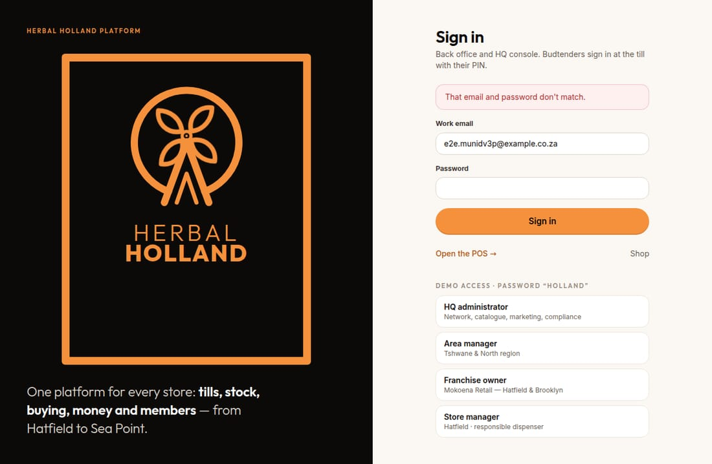
Passwords are never stored in clear; sessions are random tokens kept only as hashes in secure, HTTP-only cookies. Every login (and every demo login) is written to the audit log.
A till is any phone, tablet or computer with Chrome. It is paired to a store once; after that, staff unlock it with a personal PIN, and it keeps selling cash even when the connection drops.
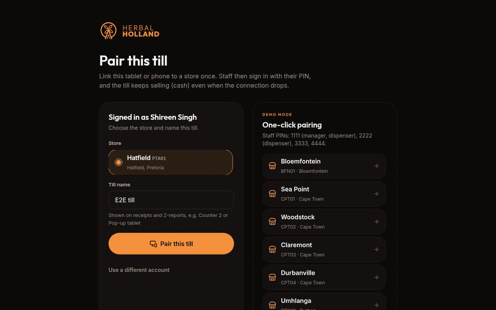
PTA01-B00042 means store PTA01, till B, sale 42 — and a pairing that lasts a year.PINs are set by the store manager or owner in the back office (Team). They must be 4 digits with no repeated or running digits, and are handed over in person. Only a store manager can unpair a till (Shift › This till), and only with no shift open; unpairing wipes the till's cached data (sales waiting to sync are kept).
Members never have a password. Anywhere the shop needs to know who you are — the Rewards card, checkout, a drop, an event — it asks for your South African mobile number and sends a 6-digit code by SMS.
If the SMS can't be sent, the shop says so and asks you to try again in a minute — it never pretends a code went out. Sign out from Rewards › Settings.
With DEMO_MODE=true (local, staging and the demo — never production):
holland. Appendix A lists them.1111 (a manager who is also a dispenser), 2222 (a dispenser), 3333 and 4444.Production must run with DEMO_MODE=false, a strong SESSION_SECRET and a CRON_SECRET. The launch checklist in chapter 11 repeats this because it matters.
All three web apps install straight from the browser — no app store, nothing sent to the server about installs. Each has its own icon and opens in its own window.1
| App | Where the nudge shows | Opens at | Notes |
|---|---|---|---|
| Herbal Holland Rewards (members) | The Rewards home (/club) under the card — "Keep your card on your home screen" — and once on the shop home for signed-in members | The member's card | Portrait; shortcuts to the card, drops, shop, orders and stores; app notifications need it on the home screen on iPhone (iOS 16.4+) |
| Herbal Holland Till | The pair screen (before pairing) — "Install the till app" — and Shift › This till | /pos, full-screen | Keeps its shell offline through a service worker; "Not now" hides the nudge for a day |
| Herbal Holland Back office (store + HQ) | The mobile header, and "Install app" in the side menu | /store, which sends each person to their own home by role | For managers, owners, area managers and HQ on a phone or a computer |
src/lib/install.ts and the component in src/components/ui/install-prompt.tsx. If a nudge doesn't appear on a device, the platform, the browser or a recent dismissal is the reason — not a fault.We sell to members only, and only to adults. Joining is free, takes about a minute, and needs no password and no plastic: the card lives on the member's phone.
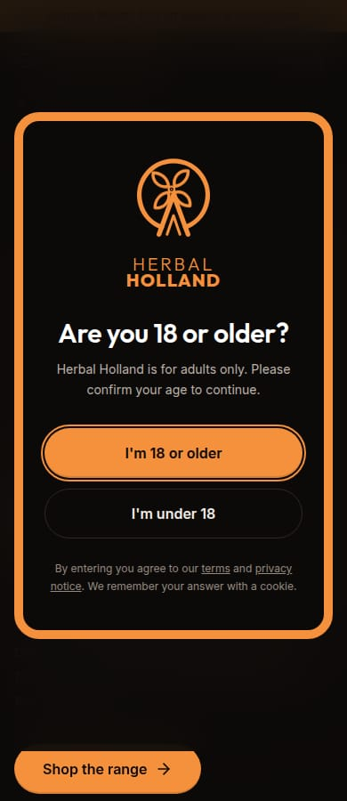
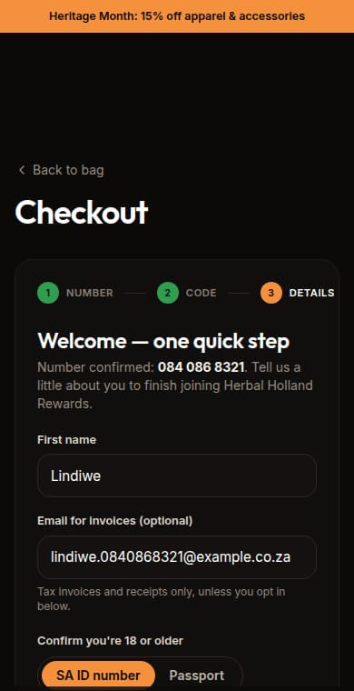
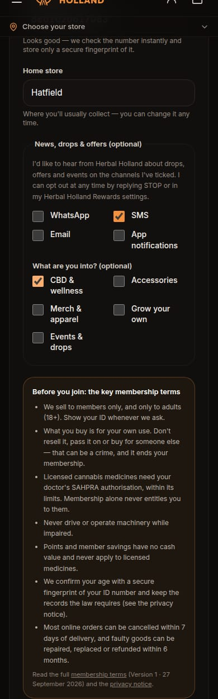
You then have a member number (HH0100001 style), a referral code, 25 welcome points, and Seed prices from your first basket. Members can also be signed up at the till in about 20 seconds (chapter 4) or in the back office (chapter 5) — the same rules apply, and staff must ask the scripted consent question.
The home page opens under the same sky as herbalholland.com — the KwaZulu-Natal hills, the stars and the windmill — with the wordmark in its window frame, "Dutch heritage. African soil.", Shop the range and Your Rewards card, and three live numbers (stores nationwide, lab-tested batches, welcome points); while the Founding Members list is open the hero tells that story instead. Then, in order: four promises (Lab-tested, every batch · Batch-traceable · Click & collect · Nationwide delivery), Windmill Days (the next events and the current drop), New in ("Just landed" — the newest products, each with its batch certificate from day one), the Founding Members panel while the list is open and the Gift vouchers panel ("Give the gift of choice."), Shop by mood ("How do you want to feel?"), Shop by category — one beadwork-edged card per category with its product count, plus the Dispensary card for registered patients — Featured this week (staff picks), the heritage story ("Four landraces. One fair promise."), the Rewards panel ("Pay less. Earn more."), Find us with your store, and the Learn guides. A store picker in the header sets your store: it shows whether the store is open now, drives what "in stock at your store" means, and loads the full store list only when opened, so the pages stay light at a thousand stores.
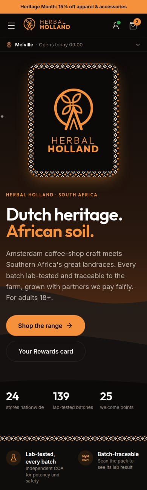
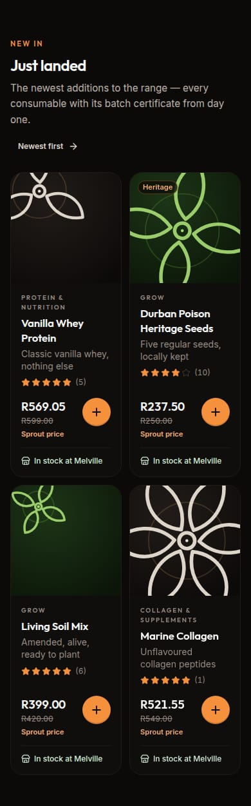
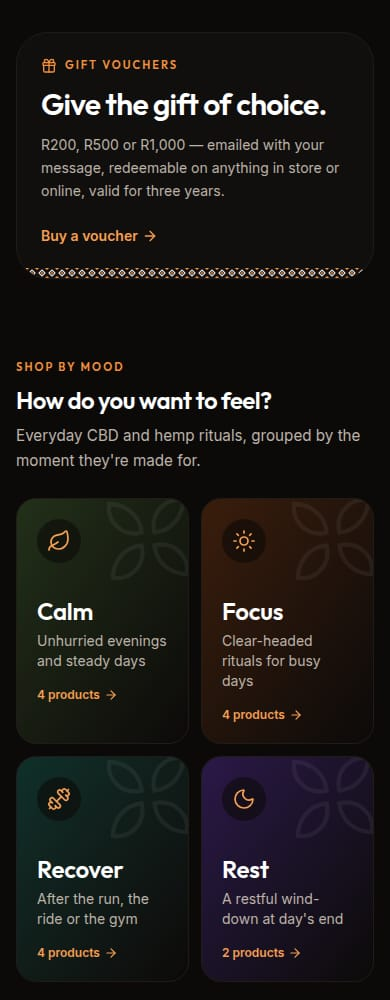
A category page opens with the same sky, the category's name and line and the search box, then the category chips with their counts, Mood, price & sort, the active filters as chips, and a Why {category} block: the category's line as its heading, one plain sentence per product class in it (approved facts, never a health claim), the lab-tested reminder, and four tiles — products, prices from and to, the stores you can collect from, and a Read first door to the Learn guide for that category.
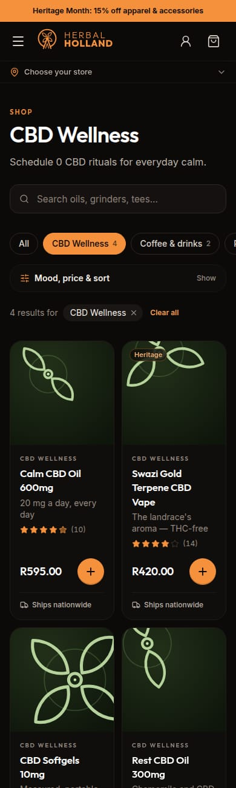
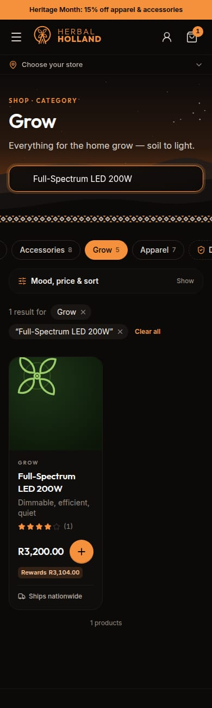
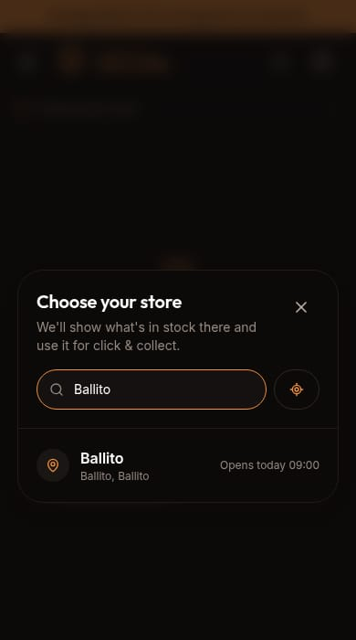
/shop takes category, mood, q (search), min/max price, sort and page. Categories are ordered by HQ; a category only shows to members once it has an active product. Every list is paginated.
A product page is built to sell honestly: the pictures, the price and the facts a member wants before paying; then everything the law wants said; then what other members think.
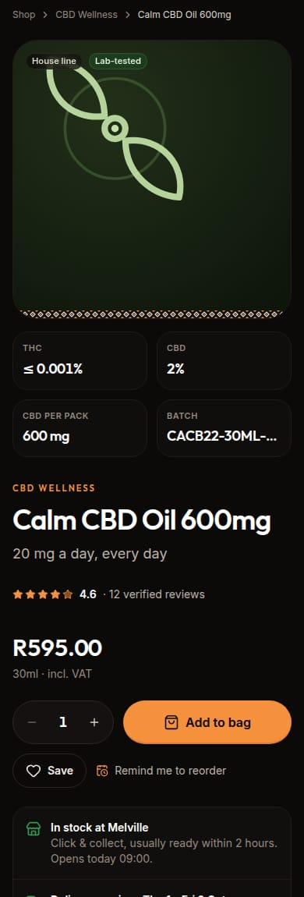
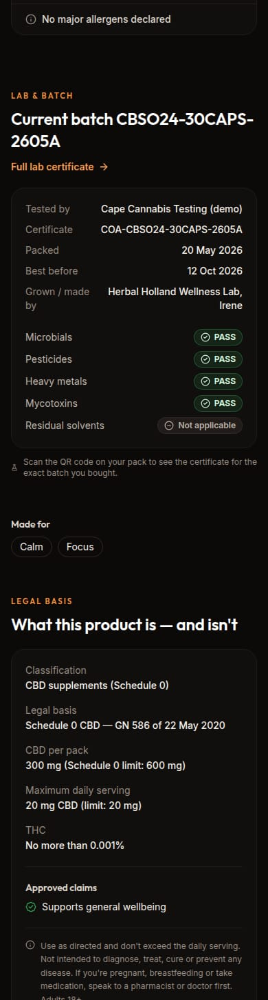
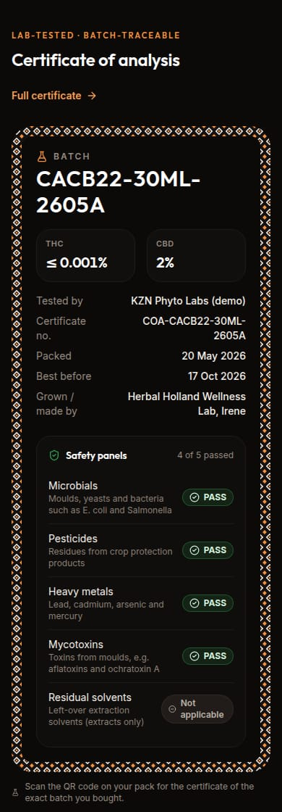
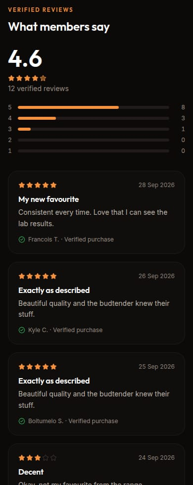
Top to bottom, where each applies:
image_urls column (appendix B) — else the generated brand art (no stock photos). Badges: Heritage, the line, Lab-tested.Every pack carries a batch code and a QR code that opens /batch/<code>: the public certificate of analysis for that exact lot. The page states plainly when a batch is recalled ("please don't use it"), on hold (quarantine) or past its best-before date, and says "No laboratory testing required" for accessories, apparel and grow gear. Behind it, stock is kept per store × product × batch, sold first-expiry-first-out, and every unit's movement is on an immutable ledger — so a recall can be traced to the stores holding it and the members who bought it in minutes (chapters 5 and 6).
/learn holds dated, sourced guides written to educate, never to promote medicines: Heritage landraces & the people who grow them, How to read a lab result, CBD & Schedule 0, explained, Registered patients & Section 21, Adults only, and always on your terms (responsible use) and How Rewards points work. Each ends with a short Learn quest: a quiz that earns 10 points, once. A "Reviewed by" line appears only when a registered reviewer is configured.
/dispensary lists licensed (THC) medicines only to a signed-in member with an active Section 21 authorisation, with the authorised quantity remaining. Everyone else sees the gate: how a doctor obtains the authorisation, how to register it in a store, and "Registered patient? Sign in". Licensed products are never in the sitemap, never indexed, and never shown on menu boards in medical mode.
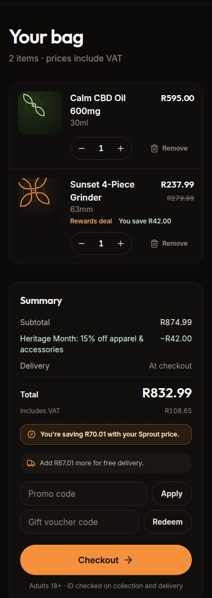
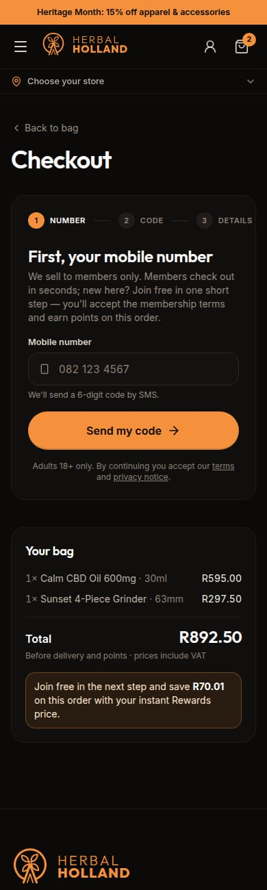
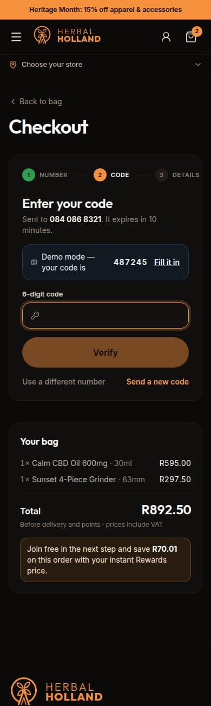
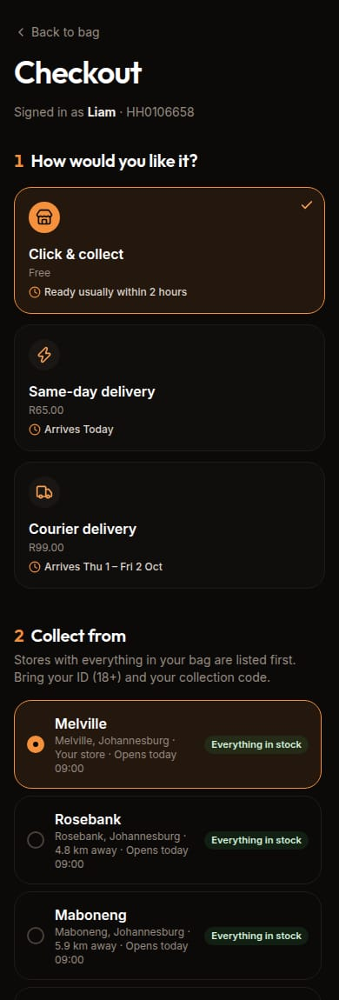
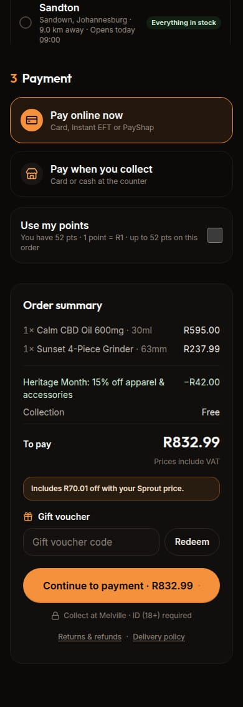
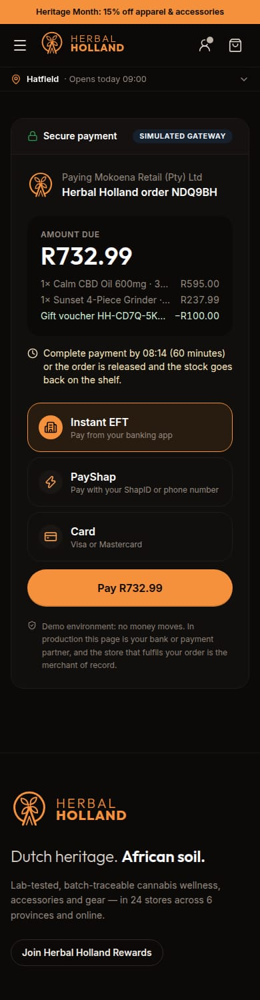
| Option | Offered when | Who fulfils it | Fee (defaults, HQ › Online orders) |
|---|---|---|---|
| Click & collect | At least one trading store has Click & collect on. You choose the store; stores that have everything in stock are listed first (your own store first even if it is short, so you see why), then nearest. | The store you chose — it must have every item on hand | Free. Ready within about 15 minutes; held for 7 days if you pay in store |
| Same-day delivery | A trading store within 30 km of you runs same-day delivery and has everything in stock; order by the cut-off (15:00) | The nearest such store; its own driver, ID checked at the door | R65; free for Bloom and Harvest members; free over the free-delivery threshold |
| Courier delivery | Always (before the first store opens, it is the only option) | A distribution centre first; otherwise the nearest store that can fill it | R99, free on baskets of R900 or more; 2–4 working days |
| Made-to-order merch | Any bag with merch goes by courier | The merch partner makes it and couriers it white-label; 5–8 working days | R100 merch courier, always on top and never free |
Every option says when it lands. Click & collect is "usually within 2 hours" during store hours; same-day is Today before the 15:00 cut-off and the next working day after it; courier orders count working days by province from the settings — Gauteng 1–2; Western Cape, KwaZulu-Natal, Free State, Mpumalanga and North West 2–3; Eastern Cape and Limpopo 3–4; Northern Cape 3–5 by default (HQ › Online orders) — starting the next working day after the cut-off and skipping weekends and public holidays. The estimate is repeated under the address ("Arrives Thu 1 – Fri 2 Oct — choose your province for a closer estimate" until the province is chosen), on the product page and on the order tracker. The delivery policy says what it is: an estimate, not a promise.
Deliver to offers your saved addresses as chips ("Home · 14 Beach Street, Melville") with New address beside them; a chip fills the fields, which stay editable. Save this address is ticked by default, labelled Home, Work or Other, so the address an order ships to is kept (or updated) for next time — up to five per member, managed under Rewards › Addresses (/club/addresses): edit, remove, or make one the default that checkout starts from. Addresses are personal information under POPIA: shown only to the member, sent to the fulfilling store on the order, and deleted with the account.
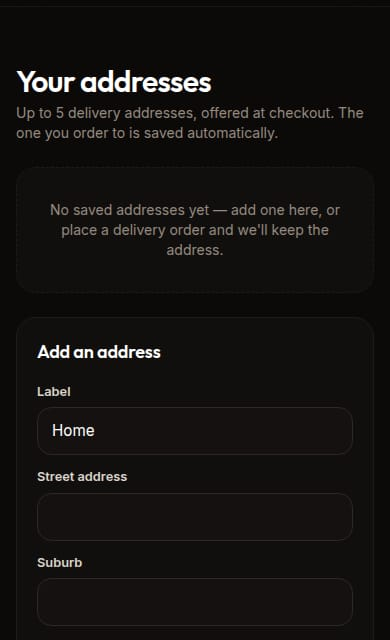
After the payment page (chapter 9 explains Peach Payments, Yoco and the simulator) the order page says Payment received, Waiting for payment confirmation… (refreshing itself), Payment cancelled with Try again, or that the payment didn't go through. The return from the payment page is never taken as proof of payment: the order is confirmed when the gateway's webhook lands.
The order page (/orders/<code>) is a live tracker: while the order is open it re-renders when you come back to the tab and every minute ("Updates by itself while it's open"). The heading says where things stand — "Collect at Hatfield", "On its way to you", "Collected — thank you", "Delivered — thank you", "Order cancelled" — with the placed time and the fulfilment. For a collection the collection code is shown large with its QR code and "Show this code and your ID (18+) at the counter — your ID will be checked. Only you can collect this order", then "Ready since … — we'll hold it for 7 days" once it is. Progress lists each step with its time and a plain line ("Checked against the batch on the shelf", "Waiting for the driver", "ID (18+) checked at the door"), with "Every update" behind a disclosure. Items carries Buy again, the totals, the points and vouchers used, and "You saved R… with Herbal Holland Rewards". A delivery order shows the address, "Expected Thu 1 – Fri 2 Oct", where it ships from, the courier and tracking number once dispatched, and "Your ID (18+) will be checked on delivery. We can't leave the parcel without it." Then the invoice, the returns panel and whom to call, quoting the order code. Only the member who placed the order sees the code, the items and the address; anyone else with the link sees the progress and a sign-in prompt.
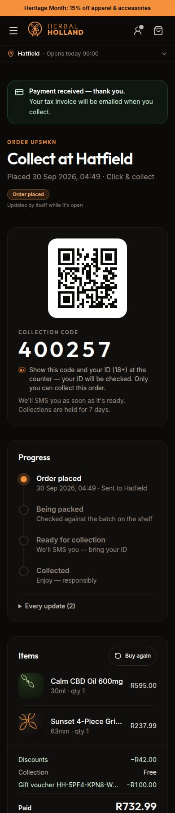
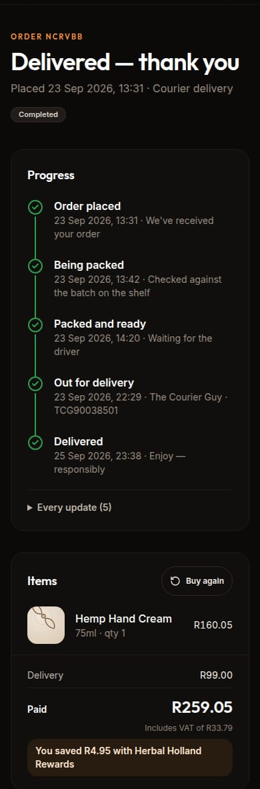
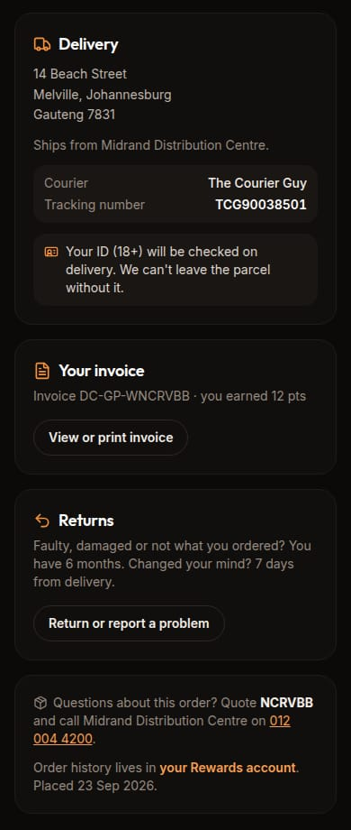
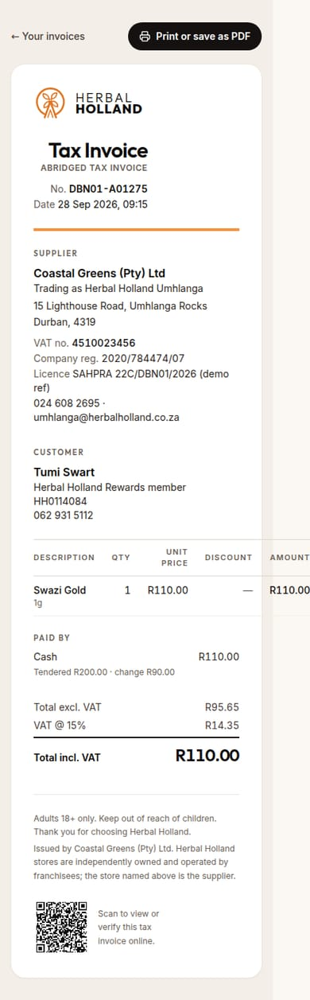
| Status | Meaning | Member hears |
|---|---|---|
| Awaiting payment | Placed with pay-online; stock reserved for the payment window | — |
| Order placed | Paid (or pay-in-store); sent to the fulfilling store or DC | SMS "order received … Track: /orders/CODE" |
| Being packed | Picking from the batches shown, first expiry first out ("Being made" for merch) | — |
| Ready for collection / Packed and ready | On the counter or the packing bench | Collections: SMS with the collection code and "bring your ID" |
| Out for delivery | Dispatched with a courier or driver and a tracking number | SMS with the tracking number ("have your ID ready") |
| Collected / Delivered | Handed over after the ID check; the sale is posted at the fulfilling store and points are added | SMS "complete — your points have been added"; tax invoice by email |
| Cancelled | By the store or HQ, or automatically (unpaid, or not collected within 7 days); stock released, points returned, online payments refunded | SMS "any payment or points used have been returned" |
Members find every order under Rewards › Orders and every receipt under Rewards › Invoices & receipts. Each sale is emailed as an abridged tax invoice (up to R5,000) or a full tax invoice (above R5,000, with the buyer's name and address captured at the till); a franchisee that isn't a VAT vendor issues a plain invoice with no VAT. Every invoice has a hosted, printable copy behind a signed link (/invoice/<id>?t=…) with a QR code — the link can't be guessed, and the QR on the paper invoice opens the same page; print it on A4, save it as a PDF, or print it on 80 mm till paper with Print receipt (chapter 9). Members can't cancel an order themselves: they contact the store, which cancels it from the back office (chapter 5).
Two doors for when something isn't right: a support desk and online return requests. Both follow the returns and delivery policies at the end of this chapter, and both keep the member posted at every step.
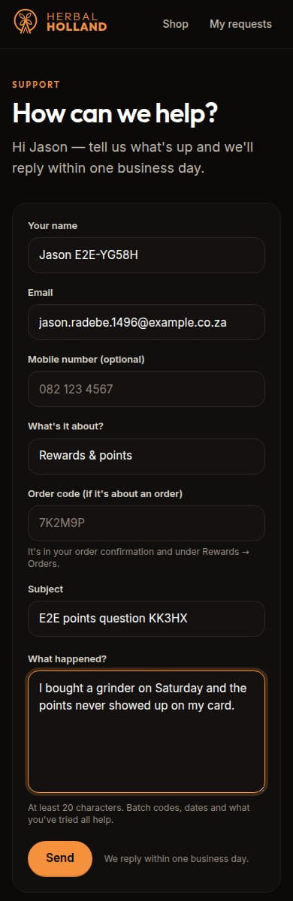
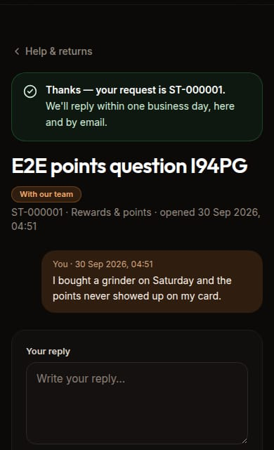
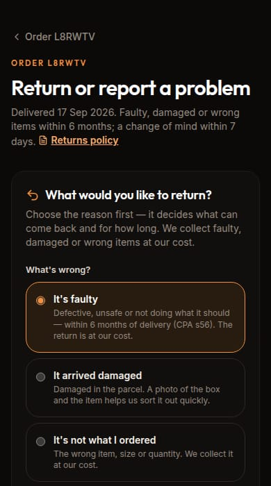
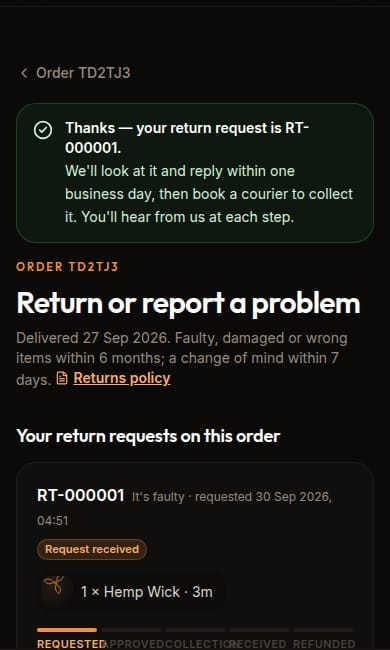
/support — "Tell us what's up and we'll reply by email within one business day. You don't need to be a member to ask." Choose what it's about (An order, Delivery or collection, A product, Rewards & points, My account, Something else), write it in plain English, give a name, email and phone, and tick the consent to use those details to reply (never pre-ticked). Members see their tickets under Rewards › Help, with the conversation and a reply box, and can attach a photo. Statuses as the member sees them: With our team, We've replied, Resolved — a reply within 30 days reopens a resolved ticket. Every ticket shows the service levels: a first reply within 1 business day and a resolution within 5 (SAST business days). Only the name, email, phone and what was written are kept; resolved tickets and their messages are deleted a year after they close.
Rewards › Orders › the order › Return or report a problem: choose the items and a reason. It's faulty (defective, unsafe or not doing what it should, within 6 months of delivery — CPA s56; the return is at our cost), It arrived damaged (a photo of the box and the item helps), It's not what I ordered (we collect at our cost), I changed my mind (until the end of the 7th day after delivery — ECTA s44; never for made-to-order merch or licensed medicines; consumables and skin care only unopened and sealed, which the member confirms and staff check on receipt), or Something else. The request then reports its progress — Request received › Approved — collection coming › Courier booked › We have it — refund on its way › Refunded, or Declined with a reason. Refunds go back to the payment used and points come back; on a change-of-mind return of a whole order the delivery fee isn't refunded, because it pays for the collection (a treatment counsel is still to confirm).
The Rewards home is the member's card: name, member number, tier, points balance and a QR code (the member number) to scan at the till, with the Founding Member number where there is one — and, once the wallets are configured (chapter 9), Add to Apple Wallet and Add to Google Wallet under it. Below: "You've saved R… with Herbal Holland Rewards", share buttons, the tier ladder with progress to the next tier, perks, a row of chips to the rest of Rewards (Wishlist — with "2 back in stock" when something returned — Reorder reminders, Gift vouchers, Addresses), My Deals, tickets and upcoming events, recent points and recent orders (each completed order with Buy again), Invite a friend, and the patient authorisation panel.
| Tier | Rolling 12-month spend | Instant saving | Perks |
|---|---|---|---|
| Seed | From joining | 3% | Birthday bonus; member-only drops |
| Sprout | R2,500+ | 5% | Early access to drops; free grinder on tier-up |
| Bloom | R7,500+ | 7% | Free same-day delivery; members' evenings |
| Harvest | R15,000+ | 10% | Personal budtender; first access to Reserve batches |
Percentages are HQ settings (HQ › Rewards); the perks are the programme's promises to members. Tiers are reviewed on every purchase against the last 12 months of spend in store and online; a Founding Member's floor holds their tier for the founding period whatever they spend.
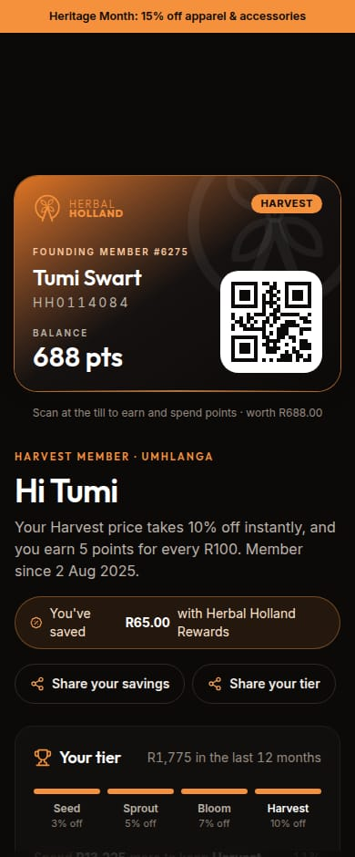
The wallet pass is the card in Apple Wallet or Google Wallet: Holland orange on warm black, the member number as the till's QR code, the tier, the points balance, the first name and the Founding number — nothing else personal. The buttons appear only when the platform holds the wallet keys (chapter 9); until then the routes simply say the wallet isn't set up yet.
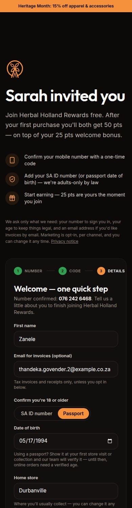
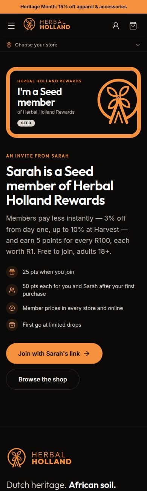
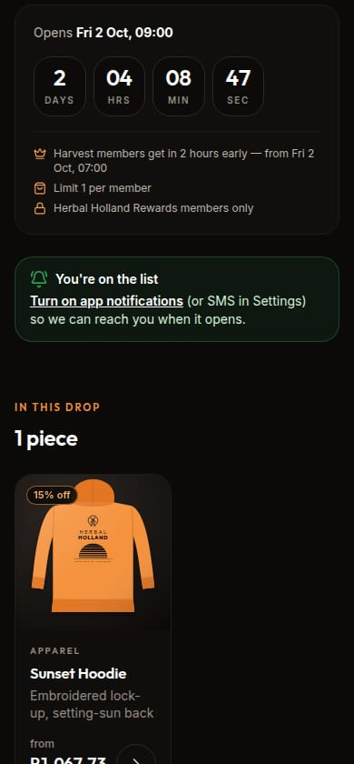
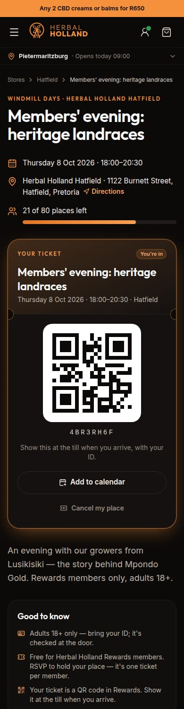
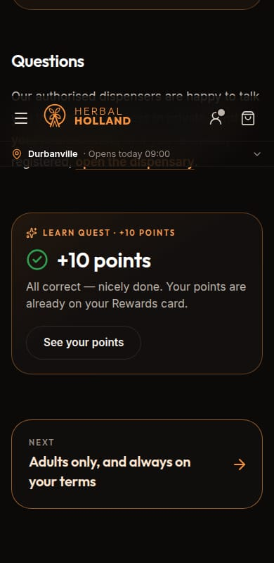
HHRSVP:…) checked in at the till from two hours before the start, an .ics calendar file, and "Cancel my place". Free for members, adults 18+, ID at the door.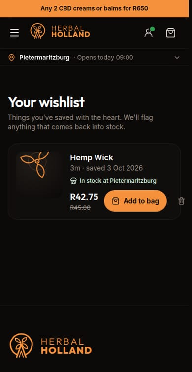
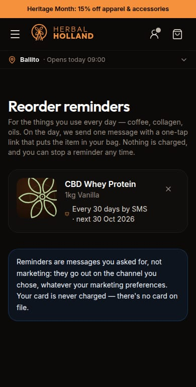
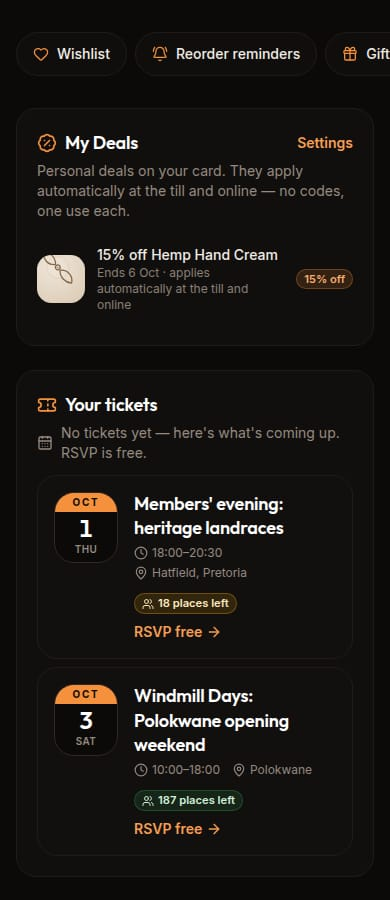
A gift voucher is money, not a promotion: it pays for anything in the range, earns nothing on top and is never discounted. /gift ("Give the gift of choice.") sells them to signed-in members — joining is free — so the receipt and the code are always in the buyer's account.
HH-K7PM-3QXR-9ZAB (no 0/O or 1/I, so it survives being read out), emailed to the buyer and to the recipient with the message, and texted to the buyer. The order page shows the code, the balance and "valid until". An unpaid voucher order lapses with every other unpaid order (60 minutes); one still pending after two days is cancelled.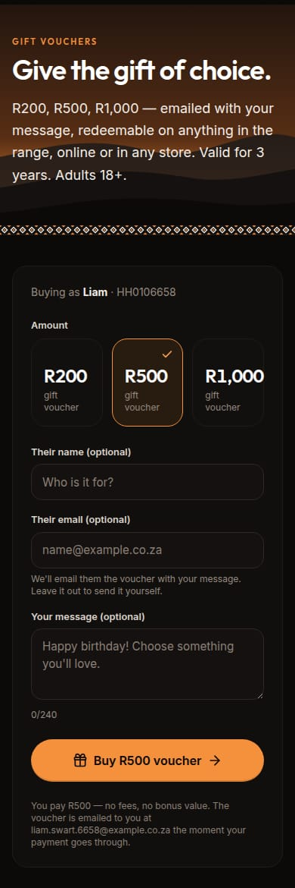
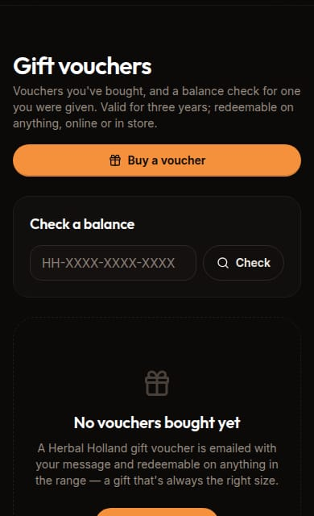
Cannabis medicines containing THC are supplied on a SAHPRA Section 21 authorisation obtained by the patient's doctor. A member brings the authorisation and their ID to any store; an authorised dispenser captures it in the patient register (number, prescriber and HPCSA number, what is authorised, the monthly quantity in grams, the dates, and a reference to the filed copy) — never the condition — and it appears on the member's card: status, prescriber, valid-until, scope, and the authorised quantity left over a rolling 30 days. Licensed items can then be added to a dispensary order for collection, and the register is a live report for SAHPRA (chapter 5).
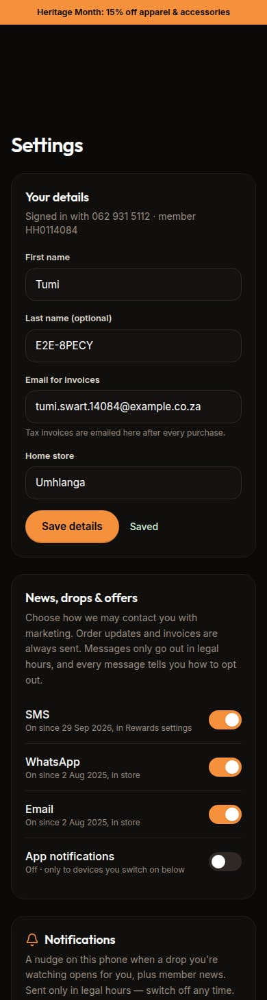
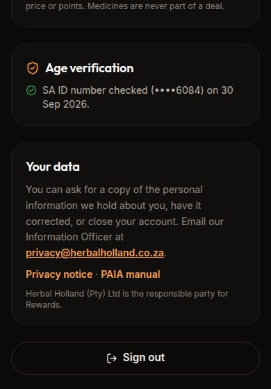
Four legal documents live on the shop at /legal/…, linked from every footer; figures HQ can change (fees, thresholds, the cut-off, the payment window) are read live from settings, never typed into the copy, and every line passes the same copy screening as marketing.
TERMS_VERSION in the code). Counsel signs it off and fills in the directors' names before launch; any change after launch bumps the version so members accept it again.The PAIA manual is on herbalholland.com (chapter 8). Copy for all four documents is in src/lib/policies.ts and src/components/shop/legal/.
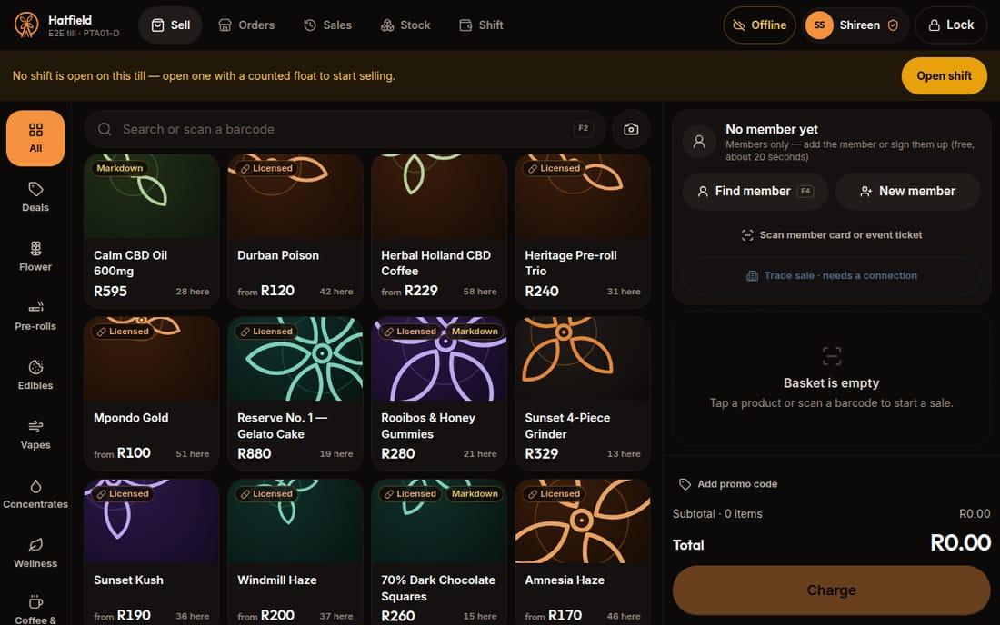
| Tab | What it's for |
|---|---|
| Sell | The basket: find products, attach the member, apply deals, check compliance, take payment, print or email the receipt. |
| Orders | The online-order board for this store: new, picking, ready, handed over today. Hand over collections with an ID check; dispatch and deliver same-day orders. |
| Sales | The last 90 days of this store's sales: reprint or email a receipt, refund lines. |
| Stock | Look up what's on hand and available here for any product. |
| Shift | Open and close the shift (float, count, Z-report), your commission this month, and "This till": refresh the catalogue, the receipt printer & drawer, the customer display, training mode, unpair. |
The chip at the top right shows Online or Offline; a badge counts sales waiting to sync. Tap Lock whenever you step away. Keyboard: F2 search, F4 find member, F9 charge.
Nothing sells until a shift is open on this till. Opening needs a connection; the till tells you if you try offline.
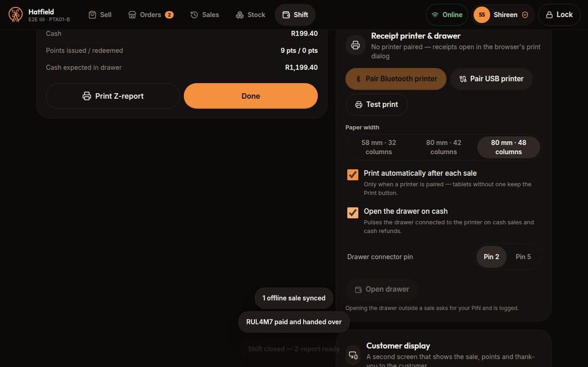
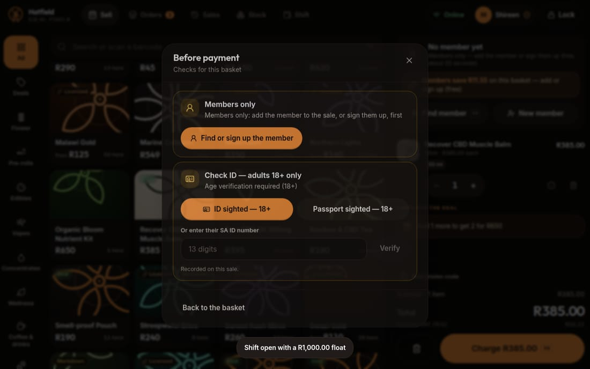
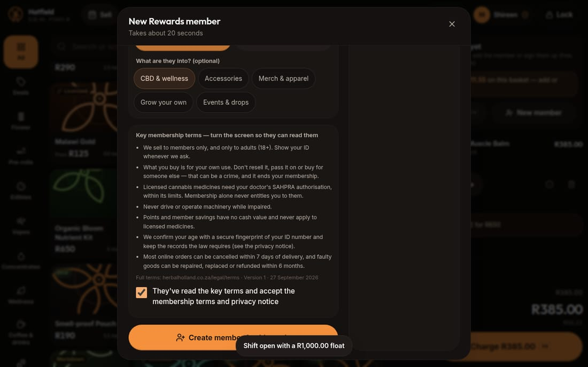
Every sale needs a member (HQ › Compliance › Members only, on by default). Tap Find member (F4) and search by phone, name or member number, or scan the QR on their card. The member card in the basket shows their tier, points, age verification, visits here, Founding number, any patient authorisation, and My Deals. New at Herbal Holland? New member:
The sheet also shows a QR code the member can scan to join on their own phone (/club/join?store=…, tagged to your store for the join-sources report).
Age-restricted items (THC, all CBD classes, hemp, accessories, grow) need a verified adult. A member whose ID number was checked or who was verified before passes automatically. Otherwise the Before payment sheet asks you to tick ID sighted or Passport sighted — recorded on the member and the sale — or to enter their SA ID number, which verifies them for good. Under 18: no sale, whatever document is shown. Every sale records how the buyer's age was confirmed (none · ID number · ID sighted · verified), and the age-checks report shows it.
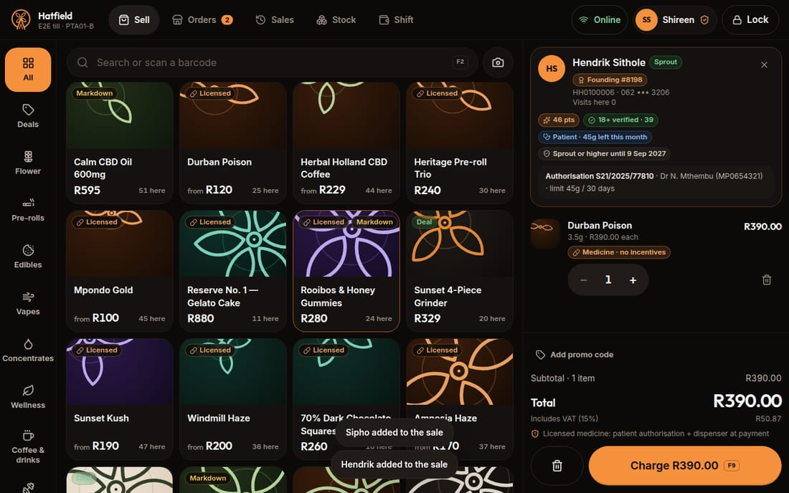
Register a new patient's authorisation in the back office (Patient register); the till reads it at once.
A sale to a business on a trade account is rung up in Trade sale mode — ex-VAT trade prices, a full tax invoice, and "On account" as a tender within the account's terms. Chapter 7 has it.
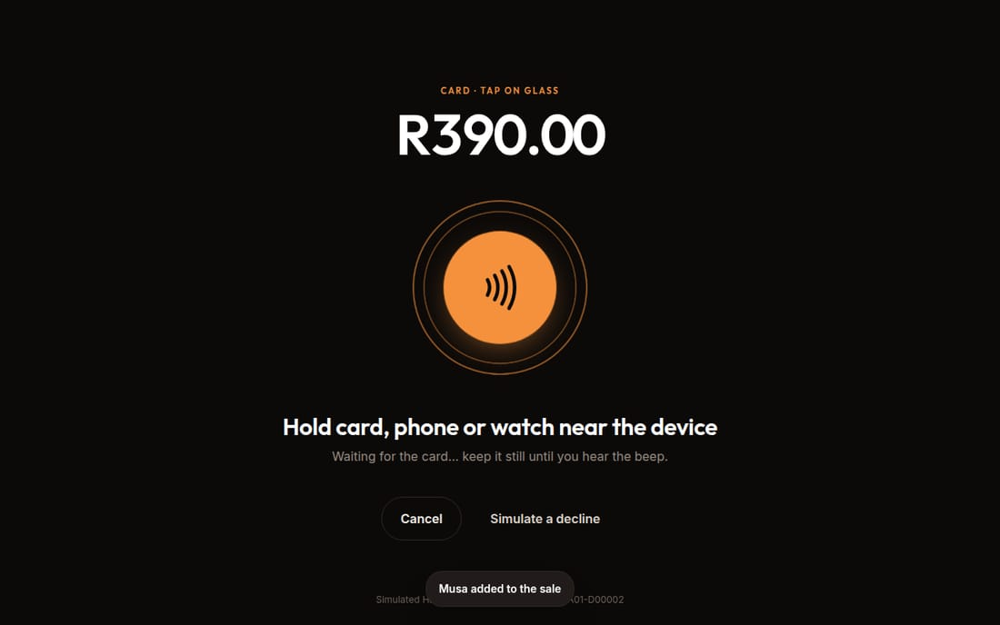
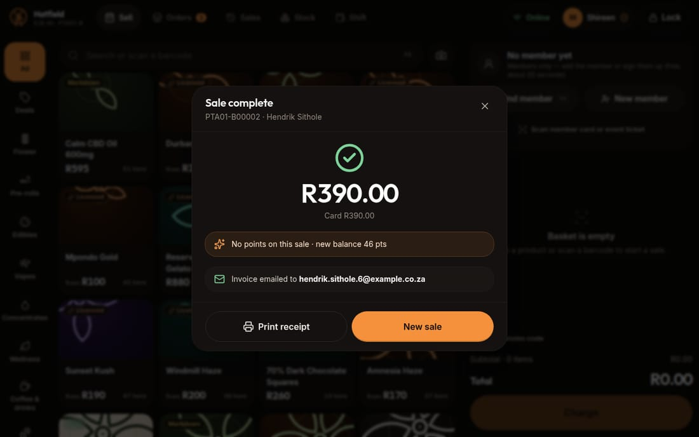
| Tender | How it works | Needs a connection? |
|---|---|---|
| Card · tap | Tap on glass. Simulated in the demo (with "Simulate a decline" for training); Halo Dot Halo.Link when HALO_APPLINK is configured. Records the provider, reference, card brand and last four. | Yes |
| Card · Yoco | When the store's tap provider is YOCO: charge the amount on the store's Yoco machine, then key in the reference the machine shows (required) and the card's last 4 (optional). The machine has its own connection. | No — works offline |
| Bank terminal | Any bank or fintech device the owner already has: charge it there and enter the approval code from the slip. | Yes |
| Cash | Quick amounts (exact, then the next round notes) or another amount; change is calculated and shown on the receipt. | No |
| PayShap | A payment-request QR code for the member's banking app; then the bank reference from the payment notification. | Yes |
| Points | From 20 points; 1 point = R1; capped as above. | Yes |
| Gift voucher | Type the code (HH-XXXX-XXXX-XXXX) from the member's email or card, or scan it — scanning a voucher anywhere on the till opens payment with it looked up. The till shows what's on it and "valid until", takes up to the balance and what's due (type a smaller amount to use less; it can never take more), and the receipt says "Gift voucher HH-…" and what's left on it. Vouchers split with cash, card, PayShap and points. The voucher is redeemed on the server as the sale posts: a voucher that is used up, expired or short is refused by name, with the shortfall, and nothing is posted. Refunds go back onto the voucher first (a voucher is never cashed out); only the rest is paid out. Z-reports carry a "Gift vouchers" line. | Yes — never on a queued offline sale |
| Paid online | Only on online orders handed over at the till: the order was paid at checkout (any gift voucher used at checkout shows as its own "Gift voucher" tender). | — |
Offline, the payment sheet says so and allows cash only — or cash and the Yoco machine when that is the store's provider; card (tap), PayShap, points and gift vouchers need the connection. The sale itself is posted on the server later (see Offline mode). A sale queued offline never carries a gift voucher: if the connection drops with a voucher on the sheet, the till says so and the cashier removes the voucher payment and takes another tender; a queued sale the server refuses stays in the outbox with the reason until a manager discards it (manager PIN, logged) after ringing it up again.
Receipts show each line's price and rule, deals and discounts, the Rewards savings in prices, VAT included (or "No VAT charged — store not VAT-registered"), tenders and change, points earned and redeemed, the new balance, and the store's receipt footer. The member number is masked on receipts (HH••••002); the card keeps the full number.
Card sales should go back to the card. A card sale refunded in cash, a refund of someone else's sale within 30 minutes, or a refund just before the shift closes, raises a Suspicious refund alert for the owner; a high personal refund rate, or refunds of your own sales, hold your commission until the alert is closed (chapter 11). Only sales can be refunded — never a refund.
Trade click & collect orders (a business buying on its trade account) sit on the same board tagged Trade · TO-…. They are packed and marked ready in the back office; the till only hands them over — the buyer's 6-digit collection code and the ID tick, nothing to take at the till. Chapter 7.
The back office has the same board with more detail (chapter 5); either place can do the work.
At the door of an event, scan the ticket QR in the guest's Rewards card (or type HHRSVP: and the code into the member search). Check-in opens two hours before the event at the hosting store, on the day; the member is attached to the basket, and a first-purchase welcome gift promotion is added when one is running. The event's door list (CSV, in the back office) is the paper fallback. Check-in needs a connection.
The till caches everything it needs — the catalogue with prices, stock and product facts, promotions, price lists, drops, the compliance settings, the staff list and the current shift — and refreshes it every three minutes while online (or by hand: Shift › Refresh catalogue). When the connection drops:
The outbox lives in the browser. Check the queue badge is zero before closing the shift or unpairing. If a till must be replaced, sync it first.
Every till works on a tablet or phone with nothing attached: receipts open in the browser's print dialog as an 80 mm slip, the camera or a keyboard scanner reads codes, and the customer display is a browser window. The hardware below is optional and set up per device under Shift › This till; the settings stay on that device and nothing about it is stored on the server.
Print automatically after each sale prints with the sale; it only applies once a printer is paired, so tablets without one keep the Print button. What prints: the store, legal entity and VAT number, every line with VAT, tenders and change, points earned and redeemed, the member's name with a masked number, a QR code and link to the signed invoice page, the licence reference and the dispensing wording where a line is a licensed medicine (and the s18A line for CBD supplements), and "Adults 18+ only. Keep out of reach of children." Refunds print as credit notes; X- and Z-reports print through the same printer. Receipts are never queued: the sale syncs when the till is offline, the paper prints locally at once.
iPhone and iPad (print through AirPrint from the print dialog), Firefox, and classic-Bluetooth "SPP" printers, which Web Bluetooth can't reach — use their USB port or a BLE model. On Windows, "Couldn't claim the printer's USB interface" means the vendor driver holds the port: swap it for WinUSB with Zadig, or use Bluetooth.
A drawer wired to the printer's DK (RJ11) port. Open the drawer on cash pulses it on cash sales and cash refunds — Pin 2 suits most drawers; choose Pin 5 if nothing happens. Open drawer outside a sale asks for a manager's PIN and is written to the audit log (pos.drawer_open; queued on the till and posted on the next sync when offline). There is no drawer without a printer, and the till says so.
A USB or Bluetooth keyboard-wedge scanner works on every screen with no set-up: scan anywhere and the till recognises product barcodes, member card QR codes, event tickets, collection QR codes and batch codes. Camera scanning — the camera button next to the search box, or "Scan member card or event ticket" in the basket — uses the browser's own barcode reader (Chrome, Edge and Samsung Internet on Android; Chrome on ChromeOS and macOS) with a viewfinder and a torch switch where the camera has one, for EAN-13, EAN-8, UPC, Code 128, Code 39 and QR. A browser without it says "Not supported on this browser" and lists what works everywhere. A pack's batch code, or its certificate QR, opens the batch: status (recalled, on hold or expired in red or amber), dates, potency, the laboratory and how many of that lot are on the shelf here.
Shift › This till › Customer display › Open on this device opens /pos/display in a window you can drag to a second monitor, or a tab on the same tablet; it follows the till through the browser with no set-up and no server. For a screen on another device — a tablet facing the member — tick Send to a separate screen and open the link or QR code it shows on that device: the display polls the till's sale through the server every two seconds, keyed by the paired till and a pairing key (New link revokes the old one). It shows the lines, the deals applied, the member's first name and points, "Tap to pay" with the amount due, then the change and the points earned, and between sales it cycles brand messages — today's deals (never on medicines) and the next event. It never shows a phone number, a member number or the name of a licensed medicine ("Dispensed medicine"). Tap the display for full screen; it asks the device to keep the screen awake.
A manager starts training under Shift › This till › Training mode › Start training (a cashier's tap asks for a manager's PIN). The till puts an orange outline around everything and the banner TRAINING — nothing is real, and a five-step tour walks a new cashier through search and scan, the member, the basket, charging and the receipt. Everything runs on a sandbox: practice sales are numbered TRAINING 0001… and never posted or queued, never move stock or award points; sign-ups and age checks are simulated on the till; receipts print — or open in the print dialog — with a TRAINING watermark; the drawer stays shut; online orders, refunds, opening or closing a shift and invoices are refused with a message; the customer display carries a training banner. Practice receipts are listed under Sales to re-print or to practise a refund. Exit training needs a manager's PIN; starting and ending are audited. Real sales queued before training started still sync.
Quiet hours: with no sale open and no touch for three minutes the Sell screen becomes a calm dashboard built from what the till already holds — takings so far this shift, click & collect orders ready to hand over, lines with three or fewer on the shelf, what's waiting on the till (no shift open, offline sales to sync, an order past the 15-minute ready time, lines showing none on the shelf, a catalogue not refreshed for six hours) and the store's next event. Any tap, key or scan returns to selling — a scanned barcode or member card starts the sale straight away. Nothing moves when the device prefers reduced motion.
Stock looks up any product's on-hand and available quantity here (available = on hand − units reserved for open online orders). Shift › Your commission this month shows what the signed-in person has earned on their own till sales at HQ's rates, after refunds, once the owner has switched commission on (chapter 5).
The menu board is a page for the store's TV: open it full-screen in a browser at /menu/<slug> (the back-office sidebar links it). It rotates the categories on its own, refreshes its data every minute, shows the day's deals, a live or coming drop with "Get notified when the drop opens", the next event ("Fully booked — thank you!" once it is), and a QR code to the shop. In medical mode licensed products are never listed; a Dispensary panel points patients to the pharmacist instead.
Run it in a kiosk browser on the TV or its stick (Chrome with --kiosk, Android TV with a kiosk app, or a Raspberry Pi): landscape and portrait both work, the cursor is hidden, categories rotate every 12 seconds, sold-out lines grey out with "Sold out", the page reloads its content from the server every ten minutes, and it asks for a screen wake lock (https only — otherwise turn off the device's screen timeout). Member prices show only on classes where the law allows incentives. Nothing on the board needs a login.
The overview leads with what the person acts on. A store manager sees the Today list first — the store's to-do list, most urgent first, built from live facts against thresholds HQ sets: online orders to fulfil (with how long the oldest has waited), loss-prevention alerts open (never about the person looking), cash past its banking deadline or due, HQ updates to acknowledge (a recall is always NOW), lots expiring within 30 days, SKUs at or below reorder point, cycle counts due by category (never counted, or older than the cadence), patient authorisations expiring within 14 days, and supplier invoices overdue or due within 7 days. Each row is NOW, TODAY or SOON; when there is nothing, the card says "Nothing needs your attention right now". Then Takings today against the same day last week, Online orders to fulfil, Stock to count and who is On shift, and the range figures below. An owner, area manager or HQ person opening a store sees the money first — Takings today, Gross margin, Cash to bank with anything overdue in red, Online orders open and Loss-prevention alerts — and the Today list under it.
The overview takes a date range (today, 7 days, 30 days, month to date, 90 days, last month) and shows Net sales (ex VAT), Transactions, Average basket, Gross margin and Member sales (share of transactions with a member), the daily net-sales chart, How sales were paid, Best sellers, Stock health (at or below reorder point, expiring within 30 days, recalled or quarantined on hand, negative stock lots), Today at the counter and any HQ announcements needing acknowledgement. Owners of more than one store land on All my stores: consolidated figures, a store comparison with each store's exceptions to drill into, and CSV export — every report takes the same toggle. A single-store manager only ever sees their store. The sidebar's Open POS goes to the till.
Click & collect and delivery orders routed to your store, oldest first while there is work to do; search by order code, member name or number; tabs by status. Stock is reserved from the moment an order is placed until it is handed over, dispatched or cancelled.
An order's page shows the lines with the batches to pick (first expiry first out), a printable pick list, the timeline of every status with who and when, the member (number, mobile, age check), fulfilment (method, courier, tracking, routing note, payment, reference, ID checked) and the next step.
Click & collect orders from business accounts (the trade channel) have their own list, Trade orders, with the same pick › ready › hand over steps and a handling fee — chapter 7.
Two sidebar items for when something isn't right. Support lists the tickets about your store and its members: open a ticket to read the conversation, reply (the member is emailed), assign it to someone on the team, set a priority, and resolve it; the service-level clock (first reply within 1 business day, resolved within 5) shows on every ticket, and a member's reply reopens it. Returns lists return requests on orders your store fulfilled, with the items, the reason and the window they fall in: Approve or Decline with a reason, Book the courier collection, mark it Received once it arrives (check the item — consumables and skin care must be unopened and sealed for a change of mind), and Refund; the member is told at each step. HQ sees every ticket and return across the network (chapter 6).
Every ranged item at your store: on hand, reserved for online orders, available, reorder point and par, sold in 28 days, value at cost, and a status (out of stock, at or below reorder point, overstock). Filters by category and stock status; search by product, SKU or barcode; export CSV. The tiles show stock value at cost, out of stock, at or below reorder point, tied up in overstock, and reserved for online orders.
An item's page adds days of cover and sales velocity, the batches on hand in the order the till sells them (first expiry, first out) with their certificates, the stock levels you set (Reorder point "reorder at or below" and Par level "order up to" — par must be at least the reorder point), price and margin (RRP, your shelf price, wholesale cost, margin), what is held for online orders, and the movement ledger: every unit in and out, newest first, with the running balance.
Write stock off or on against a specific batch, with a reason; every adjustment lands on the ledger at FIFO cost and in the audit log. Scan or search the item, pick the batch, choose why:
| Reason | Direction | Use it for |
|---|---|---|
| Damaged | out | Broken or unsellable packaging |
| Expired | out | Past its expiry date |
| Theft | out | Add the SAPS case number in the note |
| Lost / missing | out | Can't be found |
| Sample / tester | out | Opened for display or staff training |
| Quality issue | out | A complaint or a failed inspection |
| Recall return | out | Sent back to the distribution centre |
| Destroyed (witnessed) | out | The destruction register — a witness must be named (cannabis waste) |
| Found | in | Stock found that the system didn't know about |
| Correction | either | Fix a capture error — say what happened |
The page shows the net impact and movement count for the period, where stock is going, and the history with search. Quantities are whole numbers up to 10,000; you can't write off more than the lot holds.
Every lot on hand, traceable to its certificate of analysis, with units on hand, blocked units (recall or hold), expiring within 30 days and expired. Network recalls & holds lists batches HQ has blocked and what you hold of each: recalled and quarantined batches are blocked at the till, the DC and the web shop instantly. Resolve them here — Recall return to the DC (with the waybill in the note) or Destroyed with a witness — and expired lots with Expired. An unexpired lot can't be written off as expired.
The purchasing page tracks on order, deliveries to receive, received this month and items below reorder point. Quantities are whole numbers up to 10,000; a store not yet linked to a DC is told to ask HQ.
Buy surplus stock from other Herbal Holland stores, and list your own overstock (items over target are suggested first). Prices are per unit ex VAT; HQ clears every trade on the monthly franchise statement, so no money moves between stores; batches travel with the stock, so traceability is kept. A seller accepts (which commits the stock) and ships FEFO; declining puts the units back on the listing; the buyer receives as for a DC order. You can't buy your own listing or from a store that isn't trading.
RRP is a recommendation: you set your own shelf prices for your tills (Competition Act s5(2)); online prices are set nationally; Rewards member prices and deals apply on top of your price. Search an item and set its price, or Bulk change a whole category relative to RRP (−50% to +100%) or hand it back to RRP. The page shows ranged items, items with your own price and the average margin; HQ's margin guide only warns, never blocks. Tills pick up changes on their next refresh.
Members whose home store is yours (or who bought here): points outstanding, bought here in 30 days, average spend here; search by name, mobile, email or member number; filter by segment and marketing consent. A member's page shows their points balance, spend and visits here, purchases here, the points ledger, profile (mobile, date of birth, referral code, referred by), the age check with Record a check (ID sighted, or validate an SA ID number), marketing consent toggles, and their patient authorisations. Enrolment here follows the till's rules exactly, including the scripted consent question and the key terms.
The Dispensing register tab lists every licensed medicine dispensed in the period: patient, authorisation, prescriber, product, batch, quantity and the dispenser — printable for SAHPRA.
Franchisees run store-scoped promotions — percent off, rand off (up to R5,000), multi-buys (2–20 items for a price), bonus buys (buy X get Y at a discount or free), points multipliers — with dates, days, happy hours (24-hour times), a maximum number of uses and an optional code (4–16 letters or numbers, unique across the network), inside HQ's rules: never on medicines, copy screened. HQ deals running in your store are shown read-only.
Campaigns go to your own members only — all of them, a segment, a tier or an interest they told you about when they joined — by SMS (up to 3 parts) or email (up to 2,000 characters), optionally linking one of your promotions with a code. The audience count shows how many have consented on that channel after the do-not-contact list. Sends outside the legal window are held until the next allowed time; sent campaigns can't be cancelled.
Members' evenings and opening weekends at your store: name, when, capacity, description (screened), an optional welcome gift. Changes show in the Rewards app straight away; an event with tickets can't be deleted, only changed. Each event has a door list (CSV) as the paper fallback for the till's ticket scanner.
Your profit & loss ex VAT for the range: net sales, cost of sales (FIFO), gross profit, operating expenses, franchise fees, net profit, with the monthly trend; a VAT201 working (output tax on sales against input tax on stock, expenses and fees) or "Not VAT-registered"; and links to cash-ups, expenses, the statement and reports.
Every till shift: opening float, cash taken, expected in drawer, counted at close, variance — variances over R50 are flagged red. Tiles: shifts closed in 30 days, net cash variance, shifts with a variance, largest short. A shift's page lists takings by tender and every transaction in it.
Cash from closed cash-ups must reach the bank by the end of the next business day (public holidays excluded); Cash waiting to be banked lists the cash-ups, what each hands over (counted cash less the float that stays in the till) and by when, with overdue ones marked.
Slips are stored in Cloudflare R2 (EU) or on the server, served only through the app to the store's managers, owner and HQ, and every view is audited.
Capture running costs from supplier invoices: date, category (rent, salaries, utilities, security, marketing, supplies, bank fees, other), description, supplier, amount incl. VAT, and whether VAT is claimable (only if your company is VAT-registered and the supplier's invoice shows VAT). They feed the P&L and the VAT201 input tax; the page shows spend by category.
What the store owes the distribution centre, other stores and outside suppliers, each with a photo or PDF of the invoice. Capture one when a delivery is received — the received stock order's page has a Supplier invoice card with the supplier and dates filled in — or under Finance › Supplier invoices › Add invoice: supplier, invoice number, invoice date and due date, total incl. VAT, whether it is a tax invoice with 15% VAT (it counts towards your input tax only if your company is VAT-registered), the file (JPEG, PNG or PDF up to 8 MB — the bytes are checked, not the name) and a note. The same invoice can't be captured twice. Mark paid (with the date and a note) as you settle them; Query one that doesn't match the delivery, saying what's wrong, and Reopen it ("It's due again") once that is settled. Invoices due within seven days and overdue ones appear on the Today list; HQ › Finance sees what every store owes and what is overdue. Every step is audited, and the files are served only through the app.
What each person earned on their own till sales at HQ's rates (2% of net sales ex VAT by default, by product class; 0% on licensed medicines and CBD supplements by law), after refunds, never below zero for a month. The owner switches it on (it is remuneration — agree it with staff in writing), approves each month for payroll once the month has ended, downloads the CSV, and can release a person held by an open loss-prevention alert. Staff see their own figure on the till.
One statement per month between your store and HQ, netted to a single amount: credits — online sales HQ collected for you, points redeemed in store (reimbursed from the pool), My Deals given (funded by the marketing fund), stock sold to network stores; debits — royalty and marketing levy on net sales, e-commerce commission on online sales you fulfilled, VAT on fees, points issued (funding the pool), wholesale stock on account, stock bought from network stores. Positive: HQ pays you; negative: you pay HQ. HQ emails them monthly (chapter 6).
Reports is the reports centre for your store (and all your stores, for an owner): live, filterable, charted and downloadable as CSV, in seven groups — Sales, Inventory, Purchasing, Finance, Members, Marketing, Compliance. The full list, with what each answers, is in chapter 6 — including the two member reports, Member cohorts and Retention & order value; the same definitions serve HQ, scoped to your store. Every CSV export is audited; HQ can also schedule a report to arrive by email (chapter 6).
Loss prevention lists the alerts raised about your store — cash-ups short, deposits short or late, suspicious refunds, unusual write-offs, sales on own member cards, offline selling, out-of-hours sales, compliance exceptions — with their evidence. Mark one Investigating, Resolve it with a note, Dismiss it as a false alarm, or Reopen it; every step is in the audit log. An alert is never shown to the person it is about, and the rules and thresholds are HQ's (chapter 11 lists them).
Everyone who works the tills. Add a person with their full name, role (budtender, or manager — only the owner can add managers), a 4-digit till PIN (no repeated or running digits; share it in person), optionally a work email and a back-office password (at least 8 characters — managers only), and whether they are an Authorised dispenser (may complete sales of licensed medicines — only for your responsible pharmacist or trained, authorised staff; only the owner can tick it). You can set a new PIN, link or unlink the person's own Rewards member card (so the loss-prevention rules can see sales rung up on their own card — ask the owner to change your own), and deactivate them. Reset PIN (or Set PIN) is a small form in the row: type the four digits and save — "New PIN set for Anika Daniels. Share it in person, never by message." Owners are listed separately.
News, launches, policy changes and recalls from HQ. Some must be acknowledged by a manager — they stay on the dashboard until they are.
Store details shown on the website, store finder, receipts and order messages: phone, email, WhatsApp (service messages only), and the services — Click & collect (turn off during stock takes or renovations) and Same-day delivery (this store may be picked for same-day orders within 30 km). Changes reach the website and store finder straight away. The Notifications card — "Push notifications to your phone for the stores you look after" — has one switch, Notify me on this phone: managers, owners and area managers switch it on per phone or browser (on iPhone the back office must be on the Home Screen first; a blocked site, or a browser that can't show notifications, says so) and hear about new online orders as they come in (checked every 5 minutes), loss-prevention alerts about other people, HQ updates that need acknowledging, lots about to expire, cash due at the bank and a daily low-stock digest; a tap opens the page in question. The scheduler sends them (chapter 11) and never twice for the same event; without push keys on the server the switch says "Push notifications aren't set up on this server yet (WEB_PUSH keys) — ask HQ." Licences & VAT, the company, format, region, DC and franchise fees are held by HQ — contact HQ to change them.
The back office and the HQ console share one set of list conventions, so a manager who knows Stock on hand can read HQ's catalogue without learning anything new.
Every back-office and HQ screen — the overviews, catalogue, stores, reports, members, audit log, messages, online orders, stock on hand, banking, team and settings — scores 100 for accessibility and 100 for best practices in Lighthouse: every control is reachable and usable from the keyboard, every input is labelled, dialogs and drawers keep focus and close on Escape, sort order and saving are announced to screen readers, and colour is never the only signal. Tender and compliance reviewers can re-run the audit on any page.
The overview leads with today: Network sales today against the same day last week, Net sales · month to date against the same days of last month, Stores trading today ("1 of 24 · 23 with no sale yet →"), Online orders open (new · ready), Loss-prevention alerts (high severity first) and — for the HQ team — New franchise leads ("first reply within a day") and Statements to email for last month. Then the range: net sales (ex VAT), transactions, average basket, online share and active members; Network net sales by day; Sales by region (open a region for its stores); the Store league ranked by net sales; Needs attention (store orders awaiting DC approval, batches recalled or in quarantine, SKU-store lines at or below reorder point, negative stock lots, and the Rewards liability); and Busiest hours by weekday and hour. Everything reads the daily rollups, so it is as fast at a thousand stores as at twenty.
An area manager gets the same console for their region only: the region's figures today, then Your stores, ranked — net sales, growth, average transaction and an Exceptions column (cash-ups past their banking deadline, high and other alerts, negative stock lots, "No sales yet today" after 11:00, low stock) — and an Exceptions card with the most urgent stores first. Every store opens its back office.
The stores list shows every store with its owner, trading over 30 days, transactions, average per trading store and membership; filter by region, format (Flagship, Standard, Express) and status (trading, opening soon, closed); search by store, code, city or owner.
PTA06, unique), region, serving distribution centre, format, status (Opening soon until the morning it opens — members can already choose it as their home store), optional opening date, street address, suburb, city, province, postal code (coordinates must be inside South Africa), phone, WhatsApp (utility messages only), email, receipt footer.Regions are the areas an area manager looks after; distribution centres are stores of kind warehouse. Staff logins and tills are added from the store's own back office.
Onboarding a store seeds its opening checklist from the platform's template: Legal & licences (lease, CIPC registration and bank account, VAT registration, the SAHPRA or pharmacy licence where the store will sell licensed products, the POPIA register and information officer), Set-up (fit-out, internet, the Yoco account and machines, tills paired, printers and drawers tested, catalogue ranged, Google Business Profile, store photos, opening stock received and counted), People (staff hired, logins and PINs, the authorised dispenser, training) and Launch (opening date confirmed, press and listings, herbalholland.com facts, a soft opening) — 21 tasks, 22 with the licence line. Due dates count back from the opening day and move with it while the store is still Opening soon. The HQ team ticks tasks off with a note ("Signed, filed in Drive"); area managers see them; a store that predates the checklist gets one from Start the opening checklist. Every tick is audited. Chapter 11 has the same list as a procedure.
Enquiries from the form on herbalholland.com/franchise land here (once the site is connected — chapter 8), numbered FL-…, and are visible to HQ administrators and the HQ team only. The list shows new leads waiting for a reply, open leads, disclosures sent and enquiries in the last 30 days; search by number, name, email or area; filter by status.
A lead's page shows the enquiry as sent (area, province, capital band, experience, pharmacist partner, message), Move it on through the statuses — New › Contacted › Information evening › Disclosure sent › Signed, or Not a fit — with notes for the team, who in HQ is following it up, the disclosure document date, and the history from the audit log.
A lead can't be marked Signed sooner than 14 days after the day the disclosure document was sent; record that day first. Leads that are not a fit are deleted a year after their last change by the nightly job; an HQ administrator can delete a lead on request (type DELETE to confirm). The franchise page and this pipeline never state earnings or investment figures.
The catalogue lists every product with search by name, SKU or barcode and filters by category and status (draft, active, archived). A product holds the story (name, tagline, description, brand, line), the regulatory class and its compliance data (legal basis, CBD per pack and per day, THC cap, approved claims, net content, ingredients, allergens, "naturally occurring" for CBD food), strain and terpenes for plants, moods and flavours, origin and heritage, featured, tobacco-related, and its variants. The form checks the class's rules live and again on save ("This product doesn't meet Schedule 0 CBD rules — fix it before saving"); a change to compliance data is audited separately. New products start in draft: add the story, compliance data and variants, then publish and range.
An RRP can be changed without opening the product: click it in the list (or the price range of a product with several variants) and change it in place — "EDB-DACH17-105MG: RRP R270.00 saved." — with the same checks and audit entry as the product form.
Every lot in the network with its status (released, quarantine, recalled), expiry and supplier; tiles for released, in quarantine, recalled and expiring in 60 days. A batch's page holds its lab results (the certificate of analysis shown on /batch/<code>), traceability — everyone who bought from it, from the till and online, and how many can be contacted — and batch control:
| Action | Effect |
|---|---|
| Quarantine | Blocked from sale and shipping at every till, DC and the web shop until released; a reason is required (e.g. awaiting a microbial re-test). Only a released batch can be quarantined. |
| Release | Back on sale (only from quarantine — a recalled batch can never be released). |
| Recall | Blocked everywhere at once; an announcement that every store must acknowledge; the members who bought it are listed and notified by SMS; the reason is shown to stores and members and kept on the audit trail. Stores return or destroy what they hold (chapter 5). The recalls report is the record for SAHPRA. |
Prices resolve in a fixed order, the same at every till and online: the store's own shelf price (tills only) › else the best matching zone or channel price list › else RRP; then the member's tier percentage or a member price list (whichever is lower), quantity breaks, and near-expiry markdowns at the till. Medicines skip everything after the shelf price.
Network deals and store-run offers in one list (run by HQ or by a store), live and ended. A promotion has a name that shows on receipts and shelf talkers, a type — Percent off, Rand off (an item or the basket), Bonus buy (buy X or spend Y, get Z at a discount or free; BOGO, gifts with purchase, complementary deals), Multi-buy (any N for a set price), Points multiplier (double-points Fridays) — qualifying items or categories (and reward items for bonus buys), a minimum spend, channels (POS, online), dates, days of the week and a happy hour, a maximum number of uses, an optional code, and "first purchase only" for a welcome gift. Deals apply automatically; close-but-not-quite baskets get a nudge. Pause stops a deal at once; a promotion's page shows its performance.
Distribution is the DC's desk: store orders awaiting approval, to pick and ship, in transit and shipped in 30 days; a low-stock list of SKUs at the DC. An order's page: approve, reject or cancel with a reason for the store, pick first-expiry-first-out from the batches shown (only released stock), and Ship; the tax invoice is emailed when the store receives, and settled on its statement.
Online orders is the whole network's web shop: open orders, awaiting payment, online sales and orders in 30 days; search by order code or member number; filter by status and fulfilment. An order's page shows the timeline, member, fulfilling location, courier and tracking, payment (method, status, reference, tax invoice, points earned) and Cancel order with a reason (the member is told; stock released, points returned, online payments refunded first). The same page holds the Delivery & collection settings: same-day fee, courier fee, free delivery over, merch courier, merch notice (shown with made-to-order merch — for example the partner's festive closure), same-day cut-off hour, unpaid order hold in minutes (minimum 15), collection hold in days (minimum 1). Checkout uses them immediately.
Support and Returns give HQ the whole network's support tickets and return requests, with the same actions a store has — reply, assign, prioritise and resolve; approve or decline, book the collection, receive and refund — so HQ can step in on any store's queue and keep the service levels. Tickets keep only the name, contact details and what was written; the audit log records numbers and categories, never the message.
Every Rewards member across the network (an area manager: members homed at their region's stores): members, active in 30 days, new this month, reachable by SMS; Segments — recency × frequency, each with a suggested play, sent to a campaign in one click — and Consent reach per channel.
| Segment | Who | Suggested play |
|---|---|---|
| Champions | Bought in the last 30 days, 10+ visits | Reward & recruit: referral asks, Reserve early access |
| Loyal | Bought in the last 60 days, 5+ visits | Tier-up nudges, new-drop previews |
| Promising | Recent, 2–4 visits | Education + second-category cross-sell |
| New | First purchase in the last 30 days | Welcome journey: how points work, strain guide |
| At risk | 3+ visits but quiet for 60–120 days | Win-back: double points weekend |
| Lapsed | No purchase for 120+ days | Reactivation offer, then suppress |
| Prospects | Joined, never purchased | First-visit offer at their home store |
A member's page shows lifetime and 12-month spend, points, purchases, the points ledger, online orders, profile (mobile, age check, joined via, referral), marketing consent per channel with the evidence trail (POPIA s69), patient authorisations (the condition itself is never stored), reviews, a JSON export of their data, and Anonymise member for a verified erasure request (POPIA s24): type ANONYMISE and give the request reference; points are forfeited and consents withdrawn.
SMS, email and app push to Rewards members: consent checked per channel, the do-not-contact list applied, CPA send windows enforced, and every sale attributed (a promo code or a tracked link stamps the campaign on the sale). Tiles: campaigns sent, messages delivered, attributed revenue and spend in 30 days. A campaign can be sent now or scheduled; area managers save drafts for the HQ marketing team; sent or cancelled campaigns can't be edited. Copy is screened as you type (medical claims, conditions, intoxication, minors, absolute claims, food and supplement health claims), a sender footer with our details and "Reply STOP" or an unsubscribe link is added to every message, and SMS is limited to 3 parts.1
Do-not-contact list: import the NCC opt-out registry monthly (paste the CSV or one number or email per line, up to 50,000 at a time, with a source) — every send is checked against it. Individual refusals and STOP replies are added too.
Social publishes or schedules the same post on the brand's channels through Postiz. Captions pass every copy rule plus no THC, and no selling cannabis or CBD (no buying, price, delivery or discount wording alongside them — Meta rejects cannabis and CBD ads); pictures are brand artwork only; Instagram needs a picture; X and Threads have character limits; scheduling is at least five minutes ahead. Without Postiz connected, posts are only recorded here. Everything sent is listed, and scheduled posts are edited or deleted in Postiz.
Messages (/hq/messages) is the platform's outbox: every SMS, email, push and WhatsApp message it sent, or logged instead of sending — order updates, sign-in codes, tax invoices, statements, Z-reports, drop and recall notices, staff notifications and every campaign send. HQ administrators and the HQ team see the network; an area manager sees messages to members homed at their region's stores. Filter by channel; status — Sent (delivered, or logged where no provider is set), Failed (with the provider's reason), Suppressed (no consent, on the do-not-contact list, or outside the CPA send window); kind (transactional or marketing); campaign; and dates; search by the full mobile number, email address or member number — the list itself shows recipients masked ("+27 73 ••• 9717", "e2•••@example.co.za"). Open a row for the detail drawer with the body as sent; the URL carries the message, so a link to one can be shared with the team; emails are logged as their plain-text twin and sign-in codes are masked. The campaigns page and each campaign's delivery log link straight here. The list is always bounded by date — the last 30 days unless you widen it.
Rewards shows the programme's numbers — outstanding liability (points at R1 each), members' savings, issued and redeemed in 30 days, the tier mix, points movement, top members — and its settings:
Founding Members runs the launch list: set List closes (SAST) and the shop trades normally while members join the list — every member who joins before it closes gets a place, first come first served, moved up by the friend boost (250 places) for every friend who joins with their link. When it closes, the scheduler (or Assign founding numbers now) numbers the first founding places (2,026 by default) as Founding Members, who hold at least the founding tier (Sprout) for the founding months (14). Numbers are permanent; once assigned, the settings lock. The page charts sign-ups per day, top referrers and places left.2
Drops: name and address slug, description (screened), the products (up to 50 — never medicines, the form refuses them), opens at, ends at, members only, early-access tier and minutes, per-member limit. A drop's page shows watchers, units sold, stock in stores and at DCs, and the "Notify me" alerts (app push where the member has the app, else SMS, inside legal send times, early-access tiers first). Deleting a drop stops its limits; sales stay recorded.
Events: the hosting store, when, capacity, description (screened), optional welcome gift; a door list CSV; changes show on the event page straight away; an event with tickets can't be deleted.
Finance: network net sales, store gross profit, franchise fee income and wholesale to stores; net sales by day and by region; fee income split into royalty, marketing fund levy and e-commerce commission with VAT; the Marketing fund — levy collected against spend on campaigns and My Deals, carried in the fund and reported to franchisees annually (CPA franchise regulations require a separate, auditable account); the Rewards pool — issued, redeemed, expired or forfeited, net movement, outstanding liability, instant member savings given.
Supplier invoices (HQ › Finance) shows what stores owe the distribution centres, each other and outside suppliers, as captured in their back offices — due and overdue per store with the oldest due date — and the full list behind it.
Statements: one monthly statement per store — fees incl. VAT, wholesale on account, online sales collected by HQ, net due to HQ (or to the store) — and Email all statements to each owner's statement address (a company without an address is flagged).
Commission: which stores pay commission, this month so far, awaiting approval; and the network rates per product class as basis points of net sales ex VAT (default 2%). Licensed medicines are locked at 0% ("no incentives, by law — Medicines Act s18A") and so are CBD supplements ("until counsel clears it"); stores' unapproved months use new rates straight away.
Every report takes a date range (today, 7 days, 30 days, month to date, 90 days, last month or custom dates), a scope (all stores, a region, a company or one store — an area manager is always limited to their region), and often a channel or grouping; drills into regions, stores, days, hours, categories and products; and downloads as CSV with every row (not just the 500 on screen), money in rands and dates in SAST. Exports are audited.
Email me this schedules any HQ report: weekly on a chosen weekday or monthly on a day of the month (1–28), to up to ten staff email addresses — never an outside address. The daily job re-runs the report as the person who scheduled it, with their scope and filters, stores the CSV and emails a signed download link that works for 30 days without a sign-in; the report page lists the schedules with "last sent" and Stop. Up to 20 schedules per person; scheduling and every run are audited.
| Group | Report | The question it answers |
|---|---|---|
| Sales | Sales overview | How did we trade each day — sales, VAT, discounts, baskets and margin? |
| Sales by product | Which products sell, and at what margin? | |
| Sales by category | Which categories drive sales and profit? | |
| Sales by store | Which stores lead, and who is growing against the previous period? | |
| Sales by hour | When are the tills busiest? Plan rosters around the busy hours. | |
| Sales by staff | How is each budtender performing — sales, baskets, member sign-in and refunds? | |
| Refunds | What came back, who processed it, and why? | |
| Payments & tenders | Do the takings match the bank? Tenders by day for reconciliation. | |
| Online orders | How quickly and reliably are online orders fulfilled? | |
| Trade sales | Which business accounts buy, what they take and what it's worth — by account, product and month (chapter 7). | |
| Inventory | Stock valuation | What is the stock on hand worth, at landed cost and at retail? |
| Stock movements | Every unit in and out: receipts, sales, transfers, adjustments and counts. | |
| Shrinkage | What are we losing — damage, theft, expiry and count variances — and what does it cost? | |
| Expiry | What stock is about to expire, or already has, and what is it worth? | |
| Dead stock | What is sitting on the shelf without selling? | |
| Sell-through | How fast is each product turning, and how many days of stock are left? | |
| Low stock | What is at or below its reorder point, and how much should we order? | |
| Negative stock | Where has the till sold more than the system says we had? | |
| Purchasing | Purchases | What stock did we buy, from which DC or store, and for how much? |
| Receiving discrepancies | Did we receive what was ordered and shipped? Short shipments and losses in transit. | |
| Finance | Profit & loss | Are we making money? Sales, margin, expenses and franchise fees against the previous period. |
| VAT (VAT201 working) | What VAT do we owe SARS for the period — output tax against input tax? | |
| Cash-ups | Did the cash drawer balance at every shift close? | |
| Cash banking | Did each day's cash reach the bank, in full and on time? | |
| Franchise statements | What does each franchisee owe HQ — or get paid — for the month? | |
| Rewards liability | Points issued vs redeemed by store, the settlement, and what we owe members. | |
| Trade aged balances | What each trade account owes, current and 30, 60 and 90+ days past due, as of today (chapter 7). | |
| Members | Member segments | Who are our members? Recency, frequency and value segments with the play for each. |
| New vs returning members | Are we winning new members each week — and bringing them back? | |
| Member attach rate | What share of transactions are linked to a Rewards member? | |
| Rewards savings | How much do members save instantly at the till — and do they spend more than walk-ins? | |
| Where members joined | Which QR codes, links, events and partners bring in new members? | |
| Member cohorts | Of the members who joined each month, what share came back to buy in the months after? | |
| Retention & order value | Are members buying again — and how is the average basket moving month by month? | |
| Marketing | Promotions | What did each promotion cost in discounts, and what sales did it drive? |
| Campaigns | Which campaigns reached members and paid for themselves? | |
| Compliance | Age checks | How was each buyer's age confirmed — and did any restricted sale slip through? |
| Dispensing register | Every licensed (THC) sale with the patient's authorisation, prescriber, batch and dispenser. | |
| Compliance events | What did the compliance engine block or flag, where and why? | |
| Recalls & quarantine | Recalled or quarantined batches: what was sold, who has it, and what is still on the shelf. | |
| Batch trace | Pick a batch: which stores hold it and which members bought it. |
Loss prevention (network or region): open high-severity alerts, open alerts, resolved this month, value at risk; alerts raised per week; a store risk ranking; the alert queue; Rules & thresholds (audited, applied from the next check — chapter 11 lists every rule) and Run the checks now. They run every night, at each shift close and when cash is banked; alerts already raised aren't raised twice.
Compliance is the rulebook (chapter 10): THC mode, the licensed classes, minimum age (18–25, never below 18), age-restricted classes, the class × channel matrix, the daily limit in adult-use mode, Tobacco Bill mode, members only, and "No promotions, points or commission" classes — plus a watch-list of the laws in motion (the Cannabis for Private Purposes Act and its regulations, the Cannabis Bill, the Tobacco Bill B33-2022, Schedule 0 CBD GN 586, the VAT Act s7(4) judgment, the CPA opt-out registry) with what each means for the settings. Switching to adult use needs the words ADULT USE typed; THC must stay licence-gated.
Audit log: every sensitive action across the network — who, what, where and when — filtered by person, activity and dates; entries can't be edited or deleted. The exceptions worth reviewing are in chapter 11. Announcements: news, launches, policy changes and recalls for store teams, to everyone or a region, with "Managers must acknowledge" (always on for policies and recalls) — they stay on the store dashboard until acknowledged, and HQ sees who has. Team: HQ administrators, HQ team and area managers (store teams are managed by each store); at least one active HQ administrator must remain.
A trade account belongs to a registered business that sells to adults — a pharmacy, an independent retailer, a café or restaurant, a wellness or health practice, an online shop, or another business HQ approves. Its buyers are adults, 18 or older; the applicant confirms this and keeps it true. Everything the business buys is priced ex VAT, with VAT worked out per line, and ordered in case packs.
The trade channel is a third channel beside the shop and the till: every trade sale posts in the WHOLESALE channel, so the dashboards, the franchise statement and the reports keep it apart from retail. It reaches the buyer in two ways: the trade portal at /trade (orders fulfilled by a distribution centre or a store) and trade-sale mode on any till (a business buying over the counter). HQ runs the accounts, the ledger and the DC's queue under HQ › Trade; a store sees the click & collect orders it fulfils under Store › Trade orders.
| Range (product class) | Who it suits | Traded? |
|---|---|---|
| Licensed (THC) | — | Never — whatever licences either side holds |
| CBD supplements (Schedule 0) | Pharmacies, practices | Yes, when ticked for the account |
| CBD food & drink | Cafés, retailers | Yes |
| CBD skin care · Hemp · Supplements | Pharmacies, practices, retailers | Yes |
| Accessory · Apparel · Grow | Retailers, cafés (accessories), online shops | Yes |
HQ ticks the ranges the account may buy when it approves the account; a line outside them is refused everywhere ("… is CBD food & drink, which this account isn't approved to buy"). Where a class needs a licence, the seller must hold it. Products must be live; made-to-order merch (no stock) is never on the trade list.
Prices. A line's trade price is the account's own trade price list if HQ assigned one, else the live trade price lists by priority, else the variant's wholesale price (what stores pay). Trade lists hold ex-VAT prices and quantity breaks (a lower price from a minimum quantity — the portal shows "Buy more, pay less: 36+ at R…"). VAT at 15% is added to each line and rounded half up to the cent, never backed out of a shelf price. No points, member prices, My Deals or gift vouchers touch a trade basket; a promotion applies only when HQ included the trade channel in it.
Cases and the minimum. Each variant has a case pack (six oils, twelve coffees, twenty-four papers; one for grow equipment and apparel). Portal orders are placed in whole cases and must reach the minimum order — R2,000 ex VAT by default — after any promotion. The till is not bound by cases or the minimum: a business buying over the counter takes what is on the shelf.
Licensed (THC) medicines are never supplied on a trade account. The portal does not list them, HQ's order form refuses them, and the till's trade mode blocks them — however the store is licensed and whatever the buyer asks. Age-restricted items (18+) still need the usual ID check at a counter; a trade sale replaces the member rules, not the adult ones.
The seeded network has fourteen trade accounts (TA-000001 Greenleaf Pharmacy to TA-000014 Garden Route Health Shop): nine approved — five on account with limits from R10,000 to R50,000 and 30-day terms, four prepaid — two pending applications, two on hold (one overdue, one held by HQ) and one closed; the "Trade 2026" price list with breaks on most lines; some fifty portal orders at every status; trade sales at the tills; and the ledgers, payments, a credit note and last month's statements behind them. The demo buyer is Greenleaf's owner, trade@greenleafpharmacy.co.za.
From the landing page a business taps Apply for a trade account (/trade/apply). The form takes about five minutes: the registered (legal) name and an optional trading name, the kind of business, an optional company registration number (2015/123456/07) and VAT number (ten digits starting with 4 — both are checked for shape, not verified), the billing email (pro formas, tax invoices and statements go there), the business phone and street address, Deliver somewhere else for a separate delivery address, the ranges it would like to buy, the first buyer's name, email and mobile (the mobile gets a text when a collection is ready), anything we should know, and two ticks: every buyer who orders for this business is 18 or older, and the trade terms (/trade/terms, version trade-1, recorded on the account with the time).
TRADE_EMAIL (else the franchise address) with the business and the ranges requested — contact details stay in HQ (POPIA).An account is one of Pending approval, Approved, On hold or Closed. A hold stops anything new going on account (EFT orders still work); closing signs every buyer out for good, and any balance stays due. Both are explained in "HQ: accounts" below.
Signing in. /trade/login asks for the buyer's email address and sends a 6-digit code (it works once and expires in ten minutes; five codes per address per ten minutes; five wrong tries end a code). There are no passwords. A session lasts twelve hours. A buyer whose account is pending can sign in and look; one on hold can sign in, see prices and statements; one on a closed account cannot sign in at all. In demo mode the code is shown on screen.
The portal's menu is Range · Orders · Statements · Account, with the Cart and Sign out on the right.
The trade range is priced and stocked from the account's distribution centre ("Stock and courier orders from Midrand Distribution Centre"). Search by product, SKU or barcode; filter by category. Every line shows the product and size, a stock tag (in stock, low with the units left, or out), the SKU, its range, its case of 12 (or "sold singly") and the RRP; then the trade price: R… ex VAT each · case of 12 · R… a case, with the price rule that set it (the list's name, "Trade 2026 (36+)" when a break applies) and the breaks the buyer can reach ("Buy more, pay less: 36+ at R…"). A case stepper adds whole cases to the cart; the bar at the foot of the page keeps the cart's subtotal and how far it is from the minimum order in view.
Your cart re-prices every line with the trade engine at the DC: the unit price ex VAT, the cases, and Ex VAT · VAT · Incl. VAT per line; a case stepper and Remove on each; Add more lines and Empty the cart. The totals panel shows Subtotal ex VAT, any promotion, "Courier or handling: chosen at checkout", VAT @ 15% and Total incl. VAT, and how far the cart is from the minimum ("R450.00 more to reach the R2,000.00 minimum (ex VAT)"). Problems appear as callouts and keep Checkout off until they are fixed: a quantity that is not whole cases ("… comes in cases of 12: order 12, 24, 36… "), an order under the minimum, a line the account may not buy, a line no longer on the trade list, and Short at the DC right now — which is a warning only: "You can still order; a line we can't fill in full ships short and is invoiced for what went."
How you'll get it. Courier from our DC — a flat R150 ex VAT, free from R5,000 ex VAT (the figures come from HQ's settings) — to the account's Delivery address or Billing address; or Click & collect at a store — R75 ex VAT handling, "your driver collects with a code". For collection the page lists participating stores, the account's province first, each with what it has on the shelf for this cart right now ("All lines in stock", or which lines are short and by how much); a store that cannot sell a class (a licence it lacks) is not offered.
How you'll pay. EFT (pro forma), or On account when the account is approved on credit terms and the credit decision allows it: what the account owes, plus its open on-account orders, plus this order must stay within its credit limit — the page says what is available and why not when it is not ("Over the credit limit: R1,250.00 available on a limit of R10,000.00 (owing R6,100.00, R2,650.00 on open orders) — this order is R3,220.00"). A reference (the buyer's PO number, printed on the pro forma and the invoice) and notes for us are optional. The button reads Place order on account · R… or Place order · pay R… by EFT.
Orders lists every order on the account, newest first, filtered by All · Open · Awaiting EFT · Confirmed · Ready to collect · Shipped · Collected · Cancelled, each with its fulfilment and store, payment, lines, the buyer's reference and the invoice number. An order's page has the timeline, the pro forma and EFT reference, the courier and tracking, the collection code once a collect order is ready, and the tax invoice to view or print; New order and "Reorder from a past order" start the next one.
Statements lists one month per line with its closing balance ("month to date" for the current month); a month's statement shows the opening balance, every invoice, payment and credit note with the balance after each, the closing balance and its age analysis. The same statement goes out by email on the statement day.
Account shows the terms (On account with the payment days and limit, or Prepaid (EFT)), the balance owing and what is past due, the available credit ("R6,120.00 used of R50,000.00 (R3,300.00 on open orders)"), the age analysis (Current · 30 days · 60 days · 90+ days), the ranges the account may buy, and the business details — the owner can edit the details; terms, limits, ranges and price lists are HQ's. Buyers lists who may sign in; an owner adds a buyer (name, email, phone, owner or buyer) — they get a code the first time they sign in — and removes one, which signs them out everywhere. An account always keeps one owner.
An account on hold still sees prices and its statements, and may still pay an order by EFT, but nothing new goes on account ("This trade account is on hold — settle the account or speak to Herbal Holland Trade to lift it"). A hold for an overdue invoice lifts by itself the moment what is past due is settled; a hold HQ placed is lifted by HQ.
HQ › Trade opens with the queue: Applications waiting, Open orders ("3 to pick at the DC · 2 ready to collect"), Awaiting EFT, Accounts on hold, Balance outstanding with the number of open invoices, Overdue and 90+ days, and the minimum order and fees; then cards for the applications (oldest first), the EFTs to confirm (with the reference HH-TO-… to look for on the bank statement), To pick at the DC and the accounts on hold, and links to the two trade reports and the settings. The HQ team works it; an area manager sees the same pages for their region, view only.
Accounts lists every account under All · Pending · Approved · On hold · Closed with its number, type, terms, credit limit, balance (negative means in credit), orders and the day it applied; search by account number (however typed), name, VAT number or billing email; sort any column; saved views as elsewhere.
An account's page leads with its status badge, the legal name, kind, city, terms and VAT number; four figures — Balance (and what is overdue), Available credit (limit and days), Open orders and the Last order — and the ageing chips (Current · 30 days · 60 days · 90+ days, the overdue ones in red). Four tabs:
Every change is audited (trade.account.approve, .update, .hold, .release, .close, trade.buyer.add and .remove) and every status change is emailed to the account's billing address.
Each account has a ledger: invoices raise what it owes (an order that shipped or was collected; a till sale on account); payments and credit notes lower it; adjustments go either way, always with a note. The balance is simply the sum of the entries. Ageing is FIFO on due dates: a credit that names an order or a sale settles that invoice first (an EFT for its order, a credit note for its sale, a payment HQ recorded against an order); whatever is left, and every credit without a reference, is applied to the oldest due invoice first. The age analysis then buckets what is still open by how far past due it is — current, 1–30, 31–60 and more than 60 days ("90+") — and an unapplied credit shows as negative current, so the total is always the balance.
The Ledger & statements tab has three forms and two tables:
The daily job puts an approved account on credit terms on hold when an invoice is still open more than the overdue grace (seven days by default) past its due date, after credits are applied FIFO. The reason is "overdue"; the email says what is past due on what balance ("Settle it and the hold lifts automatically"). The hold lifts itself the moment a payment, credit note or negative adjustment clears what is past due — a hold HQ placed by hand never does.
Statements go out once a month on the statement day (the 1st by default) for the previous month, to every approved or held account with anything on its ledger — once per account and month: the receipt is a row in HQ › Messages (kind trade-statement), so a rerun never sends a second copy. The email carries the opening balance, every line, the closing balance and the age analysis, and asks the account to pay by EFT with the invoice number as reference.
HQ › Trade › Orders lists orders from the portal and ones HQ placed for an account, under Open · Pending EFT · To pick · Ready for collection · In transit (shipped in the last 7 days) · Done · Cancelled · All; search by order number (TO-…), invoice number (TI-…) or the account's name or number. The work queues sort oldest first. An order is Awaiting EFT, To pick, Picking, Ready to collect, Shipped, Collected or Cancelled; the timeline on its page names each step (Pro forma sent — awaiting EFT · Confirmed — stock reserved · Picking started · Packed and ready to collect · Shipped · Handed over · Cancelled) with the time and any note.
A click & collect order is not shipped by HQ: its page shows "Click & collect at Hatfield" with a link to the store's view; the store picks it, marks it ready and hands it over (next section). Every step is audited (trade.order, .paid, .picking, .ready, .shipped, .collected, .cancelled).
When a trade account chooses click & collect at your store, the store's phones get the same push as a new online order ("New online order · Hatfield — TO-000123 · Greenleaf Pharmacy · R3,220.00 · click & collect (trade)"), and the order appears under Store › Trade orders — To fulfil · Done · Cancelled, oldest first while there is work to do, with its account, lines, total incl. VAT, payment (On account or EFT (prepaid)) and age (amber after four hours, red after a day). The money is never taken at the store: it was paid to HQ by EFT, or it is on the account's terms on HQ's ledger.
Handing over posts the sale at your store in the trade channel — FEFO lots, the handling fee, the tax invoice TI-000123, the invoice on the account's ledger — and emails the buyer ("Order TO-000123 collected") with the tax invoice. The page then reads "Handed over — sale TI-000123 posted at Hatfield · R3,306.25 incl. VAT in the trade (wholesale) channel, collected by HQ". The till's Orders board shows the same orders tagged Trade · TO-000123 ("Being packed in the back office" until they are ready) and can do the handover too — the same code and ID tick, "nothing to take at the till". A manager or owner can Cancel a trade order with a reason; cashiers cannot.
A business can also buy over the counter at any till, at its trade prices, on a full tax invoice. On the sell screen tap Trade sale (beside the member button; it needs a connection — the account, its prices and its credit terms live on the server, and a trade sale is never queued offline). The Trade sale sheet finds the account by trading or legal name, number (TA-…, however typed) or VAT number, and shows each hit's status, terms and what is available on account ("R18,400.00 available on account · owing R6,100.00"; "On hold — cash, card or EFT only"; "Prepaid — cash, card or EFT"). Pick one and the basket goes into trade mode: a blue banner Trade sale · Greenleaf Pharmacy with the terms chip replaces the member card ("Leave trade mode" to go back).
Trade sales count in the shift's cash-up like any sale (the cash part), in the Z-report, and in the store's takings — the dashboard shows "of which trade R…" so retail and trade are never confused.
Every trade sale — an order the DC shipped, a collect order a store handed over, a sale rung up at a till — writes the same daily rollups as retail, under the WHOLESALE channel, so finance, the dashboards and the reports see it without reading raw sales. Where the money sits depends on how it was paid:
| Trade sale | Paid by | Where the money is | On the store's statement |
|---|---|---|---|
| Order shipped from the DC | EFT to HQ, or on account | HQ's bank account, or HQ's trade ledger | The DC is HQ's own store: no franchise statement |
| Collect order handed over at a store | EFT to HQ, or on account | HQ collected it — it rolls up with online payments ("collected by HQ") | Credited to the store as HQ-collected takings; royalty and levy on the net sale; no e-commerce commission |
| Till sale, cash or card | Money at the till | The store's cash-up and card settlement | Royalty and levy on the net sale, as any sale |
| Till sale, on account | The account's terms | HQ's trade ledger ("sales on account" — invoiced, not yet money) | Credited to the store as HQ-collected; HQ carries the credit risk |
So a store is paid for every trade sale it makes or hands over: the monthly franchise statement's net sales include trade (shown separately — "online R…, trade R…"), royalty and the marketing levy run on it at the store's rates, the e-commerce commission does not, and what HQ collected (EFTs, sales on account, collect orders) is credited back on the statement: "Trade sales on account are on HQ's ledger — HQ carries the credit risk and credits them to you here." Points are never issued on trade, so nothing is reimbursed for them. The VAT working counts trade output VAT like any other; the P&L carries trade in its sales and margin; the store dashboard's Takings today and Net sales say "of which trade R…".
On HQ's side the trade ledger is the debtors' book: the balance outstanding and its ageing on HQ › Trade, the aged balances report below, and the statements. An EFT confirmed against a pro forma is money in HQ's account before the sale is posted; when the order ships, the invoice nets against it on the ledger (both due the same day), so a prepaid account's balance returns to zero — or to a small credit when a line shipped short.
Two reports under HQ › Reports (and from the trade overview); an area manager gets them for their region's stores, a store for its own trade sales:
Trade is also a channel on the sales reports and the finance pages wherever a channel can be chosen (in store · online · trade), and Sales by channel shows its share. Downloads and schedules ("Email me this") work as for every report (chapter 6).
HQ › Settings › Trade (wholesale) holds the channel's terms, all in rand ex VAT: Minimum order (R2,000, after any promotion), Courier fee (R150, flat, from the DC) and Free courier over (R5,000; 0 means never free), Collect handling fee (R75, the store's fee on click & collect), EFT hold (3 days — unpaid pro formas lapse after it), Overdue grace (7 days past due puts an account on hold), Statement day (the 1st), the Terms version stored on each account when it applies (trade-1), and the bank details printed on every pro forma — Bank, Account name, Account number, Branch code. "Fill these in before the first trade order": the overview says "bank details not set yet" until they are. Save trade settings; every change is audited. Trade price lists are made under HQ › Pricing with the kind Trade — items hold ex-VAT prices and a minimum quantity for each break.
The daily job (02:00 SAST) runs three trade tasks, each idempotent: EFT expiry cancels pro formas unpaid past the hold and tells the buyer; overdue holds puts accounts with an invoice past due beyond the grace on hold with the reason "overdue"; and on the statement day, statements emails last month's statement to every approved or held account with ledger activity, once each. Every email the channel sends — the sign-in code, the application received, approved, on hold, hold lifted, closed, the pro forma, the order confirmed, ready, shipped, collected or cancelled, the tax invoice or credit note, the statement — starts its subject with "Herbal Holland Trade" and is in HQ › Messages; the ready-to-collect text is one SMS segment. New applications are announced at TRADE_EMAIL (else FRANCHISE_EMAIL).
Everything a trade buyer or HQ does is in the audit log under trade.* — the application and sign-ins, approvals and holds, orders and each step, payments, credit notes and adjustments, statements, and every trade sale at a till (trade.sale, with the account and what went on account).
Have counsel sign off the trade terms (the page is marked as a draft); put the real bank account in the settings; decide which ranges pharmacies may be approved for; and appoint the trade team's address. Appendix D lists these with the other open decisions.
herbalholland.com is not part of the application. It is a set of static pages built from two files — the words in sites/herbalholland.com/content.ts and the facts in facts.ts — served by a Cloudflare Worker that also answers two small forms. It has no database of members, products or prices; it reads nothing from the platform.
| Page | What it does |
|---|---|
| Home | One scrolling journey from a Dutch polder to the KwaZulu-Natal hills at night: the hero, the Amsterdam-to-the-hills globe, the new stores ("Holland, meet the Hills."), every store, the range as categories, five words ("Lab-tested · Batch-traceable · Members only · Adults 18+ · Pharmacist-led"), and Founding Members with the early-access sign-up. Counts, dates, towns and provinces are filled in from the stores list at build time. |
| About | Our story (the name, the windmill mark), our heritage (four landraces: Durban Poison, Swazi Gold, Malawi Gold, Mpondo Gold), and Standards you can check: every batch lab-tested with a public result; members only and ID every time; CBD within Schedule 0; licensed medicines through a pharmacist; good neighbours (nothing consumed on the premises, no poster sites within 500 m of a school, no sport sponsorship, never drive impaired). |
| Stores | Open now and each opening day's stores, a map of the provinces with a store (solid pin open, ring opening), the store concept renders, and "Own the first one in your town". Each store has its own page (/stores/hillcrest) with its town, status, and — once the owner supplies them — address, phone, hours and a photo; "Opening hours and directions" points to the shop's store finder. |
| Franchise | Who we're looking for (owner-operators with retail experience, capital, standing in the community, a pharmacist partner), what owners get (the platform, the brand and the launch playbook, training), the seven steps from enquiry to opening ("At least 14 days before signing" for the disclosure document), straight answers ("We don't publish earnings projections"), and the enquiry form. |
| Press | Press releases (each on its own page, published on its date — the site is rebuilt on or after that day), the fact sheet (company, what we are, range, stores and provinces, model, membership, Founding Members, age, quality, medicines, online shop, head office, media contact), the media contact, brand assets (the logo in Sunset orange and warm black, SVG and PNG, with clear-space rules), and notes for journalists (members, adults 18+, CBD is not medicine, licensed medicines aren't for sale to the public, no consumption imagery, "Herbal Holland, two words"). |
| Careers | Why work here, the roles (member advisors, store managers, pharmacists — with the franchisee that owns the store; HQ teams — with Herbal Holland), how to apply by email, "We never charge to apply", and the POPIA note (applications kept 12 months). |
| Contact | The right inbox for each question — hello@, franchise@, press@, careers@herbalholland.com — members are pointed to the shop; company details. |
| Privacy Policy (1.2) | How herbalholland.com handles personal information under POPIA, including what the two forms keep and for how long. Last updated 28 September 2026. |
| Terms of Use (1.1) | The terms for using herbalholland.com, in plain English. Last updated 28 September 2026. |
| PAIA manual (1.1) | How to request the records held by Vantax (Pty) Ltd (the company that owns the online business) under the Promotion of Access to Information Act, and how personal information is handled; the Information Officer is Reshigan Govender. Linked from the shop's footer and Rewards settings; reviewed at least yearly. |
| 404 and the under-18 page | A friendly not-found page; the under-18 page after the gate. |
Until the shop opens, every "Shop online" and "Join Rewards" door leads to this form (on the home page's last scene and on Stores). It posts to the Worker, which keeps the sign-up in the site's own Cloudflare D1 database (herbalholland-com-eu, EU jurisdiction) with the version of the consent wording, refuses duplicates quietly, rate-limits repeat attempts, and deletes every sign-up 12 months after it joined the list. Nothing reaches the platform automatically: on launch day HQ exports the list (chapter 11) and sends the launch message only through the platform's consent-checked messaging, with an opt-out in every message.
The enquiry form asks for name, email, mobile, where they'd like to open, province, a capital band ("your own funds you could invest — a rough band is fine"), retail or business experience, whether they have a pharmacist partner, an optional message, and consent to use the details to reply. The Worker checks it with the platform's own rules, stores it in D1, gives the enquirer a reference (shown on screen with what happens next), and passes it on:
APP_ENQUIRY_URL and APP_ENQUIRY_SECRET, matching the app's SITE_ENQUIRY_SECRET): straight into HQ › Franchise leads as a numbered FL-… lead; the platform emails the team and acknowledges the enquirer.The Worker's daily job (02:15 SAST) deletes enquiries a year after they arrived, or 30 days after HQ has them; IP addresses are kept only as a keyed hash to limit repeats; only the HQ team reads them.
| To change… | Edit |
|---|---|
| Any wording | sites/herbalholland.com/content.ts — one object per page (GATE, CHROME, HOME, ACCESS, MAP, STORES, ABOUT, FRANCHISE, PRESS, CAREERS, CONTACT, LEGAL, PRIVACY, TERMS, PAIA, NOT_FOUND). Every string passes the platform's copy screening in a unit test; a legal document's version and updated date change with its text. |
| A store, its opening day, address, hours or photo | facts.ts › stores: one line per store; the globe, map, /stores, the new-stores chapter and every count and date follow from it. Photos go in static/stores. |
| Whether the shop is live | facts.ts › shop.url (null until the shop opens; then the shop's address — joining links become <shop>/club/join?src=site, tagged for the join-sources report). |
| Company details, emails, the Information Officer, social profiles, the Founding Members cap | facts.ts › company, email, officer, social, founding. |
| A press release | content.ts › PRESS.releases.items with its date; it appears on and after that date, so rebuild and deploy then. |
npx tsx sites/herbalholland.com/build.ts › dist/ (the build checks the published distances against the coordinates and every date).sites/herbalholland.com: npx wrangler@4 d1 migrations apply herbalholland-com-eu --remote && npx wrangler@4 deploy.npx wrangler@4 versions upload --preview-alias preview gives a preview address (same database and email as live — don't send test enquiries), then npx wrangler@4 versions deploy <version-id> makes that exact version live.Already set up in Cloudflare: the Worker's custom domain, www › herbalholland.com, Always Use HTTPS, TLS 1.2+, HSTS, and Email Routing for hello@, franchise@, press@ and careers@.
ONLINE_GATEWAY picks the gateway for the shop: SIMULATED (the default — a demo pay page where no money moves), PEACH (Peach Payments, the owner's choice) or YOCO (built and working, but Yoco's policy bans CBD). Either way there is one merchant for the online shop, Vantax (Pty) Ltd, whose name the pay page shows; the sale itself posts at the fulfilling store or DC on handover or dispatch, with an online tender carrying the gateway's reference.
payment.review for a person to sort out.Peach lists CBD, drug stores and pharmacies as restricted (prior written approval) and doesn't permit cannabis dispensaries; Yoco's prohibited list names cannabis and CBD. Describe the business honestly — a SAHPRA-licensed medical dispensary plus CBD/wellness retail; licensed THC is collect-only and paid in store, never couriered — and get written approval for each account before taking live payments. The app enforces the part it can: a basket with licensed products can never be paid online. Peach's approval was still pending when this guide was written (appendix D).
| Peach Payments (Orchestration, hosted checkout) | Yoco (Checkout API) | Simulated | |
|---|---|---|---|
| Pay page says | "Card and more, secured by Peach Payments" | "Card or Instant EFT, secured by Yoco" | "Card, Instant EFT or PayShap" — demo, no money moves |
| Refundable methods | Cards, Apple/Google/Samsung Pay, PayShap, Payflex, Float, Happy Pay, Mobicred, RCS, 1Voucher, MoneyBadger. Not Peach EFT, Capitec Pay, ZeroPay — leave them off, or an order paid that way can't be cancelled in the app | Cards, Instant EFT; test payments can't be refunded | — |
| Minimum | — | R2.00 | — |
| Settings | PEACH_ENV (test/live), PEACH_API_KEY, PEACH_PROFILE_ID, PEACH_PAYMENT_RESPONSE_HASH_KEY | YOCO_SECRET_KEY, YOCO_WEBHOOK_SECRET | none |
| Daily reconciliation | Merchant reference = order code; payment id = the order's payment reference (Dashboard › Reporting) | externalId = order code; checkout id = payment reference | — |
The go-live procedures (sandbox, hash key, webhook, the Cloudflare rule that lets webhooks through, the live smoke test) are in the runbook and summarised in chapter 11.
NEXT_PUBLIC_TAP_PROVIDER decides the till's card tender for the whole network (set in the app's runtime environment, never at image build; each till picks it up on its next refresh and shows it under Shift › This till › Card payments):
| Value | The till offers | Status |
|---|---|---|
SIMULATED | Card · tap: the full tap-on-glass flow, approves after a short animation; "Simulate a decline" for training | Default; demos and training |
YOCO | Card · Yoco: charge the store's own Yoco machine, key in its reference (and optionally the last 4). Works offline. Each store is merchant of record on its own Yoco account | Chosen for stores; built |
HALO_APPLINK | Card · tap through Halo Dot Halo.Link (PCI MPoC-certified SoftPOS): the server creates a session with the store's merchant id and the till hands over to the Halo app. Android 11+, Google services, no developer options; needs a connection | Adapter kept (HALO_API_URL, HALO_API_KEY) |
EXTERNAL | Bank terminal: any device the owner already has; the till records the approval code | Built (also available alongside the others) |
PayShap (a payment-request QR and the bank reference), cash and points need no provider. A Yoco Payment SDK till app that drives the machine itself is planned but not built.
| Channel | Used for | Provider |
|---|---|---|
| SMS | Sign-in codes, order updates, drop alerts, recall notices, campaigns (consented) | MESSAGING_PROVIDER=smsportal (SMSPortal REST, up to 500 per call; optional sender id); log only records messages. Codes end with @host #code so phones autofill them; a failed code send tells the member to retry |
| Tax invoices, statements, Z-reports, DC invoices, campaigns; a signed one-click unsubscribe link and List-Unsubscribe headers on marketing | SMTP_URL, EMAIL_FROM (an SA-region service such as Amazon SES af-south-1) | |
| App notifications | Drop alerts and campaigns to members who switched them on in the Rewards app | Web Push with VAPID keys (WEB_PUSH_PUBLIC_KEY, WEB_PUSH_PRIVATE_KEY, WEB_PUSH_SUBJECT); rotated subscriptions renew themselves; iPhones need the app on the home screen |
| Utility messages only, if ever | No provider: Meta's commerce policy bans drug and medical products. With a live SMS provider, WhatsApp messages are logged as failed rather than silently dropped |
Every message is written to the message log with its status (sent, failed and why); sign-in codes are masked in the log. Without providers configured (the demo), messages are only logged.
Every email uses one designed layout: the cream page, a white card with the mark and wordmark, an orange pill button, tabular figures, and a footer whose legal line comes from the franchisor's company record; every email has a plain-text twin, and only campaign emails carry the unsubscribe link and List-Unsubscribe headers. Texts follow one set of rules too: "Herbal Holland:" first, the order code next, one GSM-7 segment where possible (curly quotes and dashes are tidied, so a text never silently doubles in cost), links as the app's address without the scheme, and "Reply STOP" on marketing only. Everything sent — or logged instead of sent — is in HQ › Messages (chapter 6).
S3_ENDPOINT, S3_BUCKET, S3_ACCESS_KEY_ID, S3_SECRET_ACCESS_KEY, S3_REGION), or to disk under UPLOAD_DIR when no bucket is set. Files are always served through the app, auth-checked and audited. R2 has no South African location — the EU jurisdiction is used, and the cross-border transfer belongs in the POPIA register.POD_EMAIL, POD_PARTNER_NAME) by the 15-minute job with links to the print files; the partner emails back the tracking, which the DC enters on the order (Merch shipped).POSTIZ_URL, POSTIZ_API_KEY); pictures are fetched from the app, so APP_URL must be public.WALLET_APPLE_*, WALLET_GOOGLE_*) or the buttons stay hidden.Authorization: Bearer $CRON_SECRET, from the server itself and not through Cloudflare: POST /api/cron/frequent every 15 minutes, POST /api/cron/staff-push every 5 minutes (staff phone notifications), POST /api/cron/daily at 02:00 SAST, and POST /api/cron/operations at 03:00 SAST (expiring lots, cash due at the bank, the low-stock digest, scheduled report exports, pruning). Chapter 11 lists what each job does; every job is idempotent, so a missed or doubled run is harmless.Every document the platform issues is designed once and follows the paper: on a receipt printer it prints as a slip, on A4 as a sheet, and from any page as a PDF through the print dialog's "Save as PDF".
| Variable | Purpose |
|---|---|
DATABASE_URL, DATABASE_POOL_MAX | PostgreSQL connection; connections per app instance (default 10) |
SESSION_SECRET | 32+ random bytes; signs invoice links, hashes ID numbers |
APP_URL | Public base URL (links in messages, payment returns, social pictures) |
DEMO_MODE | true enables demo logins, pairing and on-screen codes — must be false in production |
CRON_SECRET | Protects /api/cron/* |
SITE_ENQUIRY_SECRET, FRANCHISE_EMAIL | Shared with the herbalholland.com Worker so franchise enquiries land in HQ; where new enquiries are emailed |
CONTENT_REVIEWER, ORG_SAME_AS | "Name|Job title|Registration" shown as "Reviewed by" on Learn guides (unset = none); official profile URLs for search engines |
SMTP_URL, EMAIL_FROM | |
MESSAGING_PROVIDER, SMSPORTAL_CLIENT_ID, SMSPORTAL_API_SECRET, SMS_SENDER_ID, TRANSACTIONAL_CHANNEL | SMS (and the transactional channel) |
WEB_PUSH_PUBLIC_KEY, WEB_PUSH_PRIVATE_KEY, WEB_PUSH_SUBJECT | Rewards app notifications and staff phone notifications (VAPID) |
WALLET_APPLE_PASS_TYPE_ID, WALLET_APPLE_TEAM_ID, WALLET_APPLE_CERT_PEM, WALLET_APPLE_KEY_PEM, WALLET_APPLE_WWDR_PEM | Apple Wallet pass for the Rewards card — all five, or the button stays hidden |
WALLET_GOOGLE_ISSUER_ID, WALLET_GOOGLE_SERVICE_ACCOUNT_JSON | Google Wallet pass for the Rewards card — both, or the button stays hidden |
NEXT_PUBLIC_TAP_PROVIDER, HALO_API_URL, HALO_API_KEY | The till's card tender; Halo Dot |
ONLINE_GATEWAY | SIMULATED | PEACH | YOCO |
PEACH_ENV, PEACH_API_KEY, PEACH_PROFILE_ID, PEACH_PAYMENT_RESPONSE_HASH_KEY | Peach Payments (change the four together) |
YOCO_SECRET_KEY, YOCO_WEBHOOK_SECRET | Yoco Checkout API (change the two together) |
POD_EMAIL, POD_PARTNER_NAME | Merch partner's order inbox and name |
POSTIZ_URL, POSTIZ_API_KEY | Social posting |
S3_ENDPOINT, S3_BUCKET, S3_ACCESS_KEY_ID, S3_SECRET_ACCESS_KEY, S3_REGION, UPLOAD_DIR | File storage: a bucket, else disk (back it up) |
The Worker for herbalholland.com has its own: APP_ENQUIRY_URL, APP_ENQUIRY_SECRET, NOTIFY_TO (secrets), NOTIFY_FROM (in wrangler.jsonc).
This chapter describes what the platform does. Counsel signs off the settings, the membership terms, the policies and the claims library before launch and whenever the law moves. As researched on 27 September 2026: private adult use is decriminalised, the Cannabis for Private Purposes Act (2024) is not yet in force, a commercial Cannabis Bill is expected from mid-2027 — so commercial THC trade is lawful only under SAHPRA licensing, and the platform's default mode is MEDICAL.
Every product has exactly one regulatory class. The class decides where it may be sold, whether it is age-restricted, whether it may carry incentives, what facts it must declare, and which rules its master data must pass before it can be listed (defaults shown; HQ › Compliance changes them without a deploy).
| Class | What belongs in it | Sold via | 18+ | Deals, member prices, points, commission | Master-data rules and facts |
|---|---|---|---|---|---|
| THC — Licensed | Cannabis medicines containing THC | In store and click & collect only; only at licensed stores; to patients, by a dispenser (medical mode) | Yes | never (medical mode) | Grams per unit for the limits; legal basis "SAHPRA licence — medical pathway (Section 21)" |
| CBD — supplements (Schedule 0) | Oils, softgels (complementary medicines) | All channels | Yes | no, by default (until counsel clears it) | up to 600 mg CBD per pack, up to 20 mg daily dose, THC up to 0.001%; ingredients and allergens; approved low-risk claims only (GN 586 of 2020) |
| CBD food & drink | Coffee, tea, protein | All channels | Yes | yes | Net content required; CBD up to 0.0075% of net content (0.075 mg per gram or ml, e.g. at most 18.75 mg in 250 g); only the CBD naturally in the ingredients (tick to confirm); THC up to 0.001%; ingredients and allergens |
| CBD skin care | Creams, balms | All channels | Yes | yes | THC up to 0.001%; no daily dose (applied, not taken); net content and ingredients; claims screened; legal basis defaults to cosmetics (Act 54 of 1972) |
| Hemp | Hemp seed and fibre products, no CBD claims | All channels | Yes | yes | Hemp up to 2% THC (Plant Improvement Act) |
| Supplements | Collagen, plain protein — no cannabis at all | All channels | — | yes | No CBD fields; ingredients naming CBD, cannabis or hemp are refused; net content, ingredients and allergens (foodstuff, R146 labelling) |
| Accessory | Grinders, glass, papers, gear | All channels | Yes | yes | "Tobacco-related" flag for pipes, papers and vapes |
| Apparel | Clothing and merch | All channels | — | yes | Merch designs carry the brand and heritage motifs only; sold on its own, never as a gift with medicines |
| Grow | Soil, nutrients, lights, seeds | All channels | Yes | yes | Seeds: legal position unclear — review |
Every store is adults-only regardless (supplements and apparel aren't age-restricted by law, but the shop's gate and the membership terms apply to everything). The catalogue form, the save action and the CSV import all run the same checks; a change to compliance data is audited as compliance.product.
The Medicines Act prohibits supplying a medicine under a bonus, rebate or other incentive scheme. The platform applies this to licensed products in medical mode and to the classes HQ lists under No promotions, points or commission — CBD supplements by default, until counsel clears them. For those lines, everywhere at once: no promotion applies and the line doesn't unlock one; no member or tier price; no volume price; no near-expiry markdown; no points earned, and no points may be redeemed against them; never in a drop, a My Deal or a welcome gift; no staff commission (locked at 0%); the till marks the line Medicine · no incentives. Merch is never given away with, or earned by, a medicine purchase.
With Members only on (the default), every sale — online and at the till — needs a registered member. Membership is a control (verified adults, records, traceability for recalls); it never makes selling THC lawful by itself. Everyone accepts the versioned membership terms when they join, with the key terms shown in plain language first (CPA s22 plain language, s49 notice of terms that limit rights); the accepted version and time are kept on the member and in the audit log. The terms and the returns and delivery policies carry the supplier information and cooling-off rights ECTA s43 and s44 require, the 30-day delivery rule (s46) and the 6-month faulty-goods rights (CPA s56). Walk-ins join at the till in about 20 seconds; offline, the till takes the member number from the card and the server checks it on sync — an unknown number is audited, not lost.
CPA Regulation 4 permits direct marketing on weekdays 08:00–20:00 and Saturdays 09:00–13:00, never on Sundays or public holidays. The platform holds any campaign or drop alert scheduled outside those hours until the next allowed slot (the SA public-holiday calendar is built in). The 2026 CPA regulations' opt-out registry is imported monthly into the do-not-contact list, which every send is checked against.
Every piece of copy that could reach a member — campaign messages, product copy and claims, category names and blurbs, events, drops, reviews, the policies, and every string on herbalholland.com — is screened for: medicinal claims (cure, treat, heal, prevent, remedy — Schedule 0 CBD may only make low-risk wellness claims); named medical conditions; glamorised intoxication (ARB Code 3.3); references to minors; absolute or unsubstantiated claims ("100% safe", "clinically proven" — ARB Code 4.1–4.2); and food and supplement health claims (boost, detox, fat-burning, anti-ageing, immunity, weight loss, slimming, metabolism — R146). A campaign with a finding can't be sent. Social posts add: no THC, and no selling cannabis or CBD (no buying, price, delivery or discount wording), brand artwork only, organic posts only — Meta rejects cannabis and CBD ads; no TikTok.
| Record | Kept |
|---|---|
| Sales, invoices, stock movements, dispensing register, audit log | Statutory retention; never deleted (a member's personal details can be detached by anonymising) |
| Consent ledger | With the member, as evidence |
| Sign-in codes | 10 minutes |
| Franchise enquiries on herbalholland.com | 1 year after arrival, or 30 days after HQ has them; not-a-fit leads in HQ deleted a year after their last change |
| Early-access sign-ups | 12 months at most |
| Job applications (by email) | 12 months |
| Failed invoice emails | Retried for 3 days |
The PAIA manual for Vantax (Pty) Ltd is published at herbalholland.com/paia (version 1.1), linked from the shop's footer and Rewards settings, and reviewed at least yearly. Requests for records go to the Information Officer at hello@herbalholland.com.
| Local | Staging | Production | |
|---|---|---|---|
| Database | Postgres 16 (Docker or local) | Postgres on the staging server | Postgres 16 on our own server in South Africa, WAL archiving + nightly dumps |
| Files (slips) | .data/uploads on disk | An R2 bucket | Cloudflare R2 (EU jurisdiction), or UPLOAD_DIR on the server |
| Data | The seeded demo network | An anonymised copy or the seed | Real — never seed (the seed truncates every table and refuses to run in production) |
| DEMO_MODE | true | true, clearly labelled | false |
Hosting: the app and Postgres on our own server in South Africa, with Cloudflare in front (DNS, TLS, WAF, bot protection, static caching) through a Cloudflare Tunnel, so the server has no open inbound ports. The app doesn't run on Cloudflare Workers; herbalholland.com does.
cloudflared tunnel to port 3000, the environment variables (chapter 9). Cloudflare: proxied DNS, SSL Full (strict), WAF managed rules, a cache rule for /_next/static/*, and a WAF rule that lets POST /api/payments/peach (and /yoco) through without challenges — a challenged webhook never lands.UPLOAD_DIR — include it in backups.DEMO_MODE=false.ANALYZE; on the database.POST /api/cron/frequent every 15 minutes and POST /api/cron/daily at 02:00 SAST with the bearer secret, from the server itself (Cloudflare cuts requests at 100 s; the daily job at 1,000 stores takes about 30 s for the loss-prevention rules alone).PEACH_ENV=test, the API key, the profile's hash key, the webhook registered in the Peach Dashboard, only refundable payment methods on); test a courier order paid with a sandbox card › Payment received, the audit entry order.pay_online, the member's SMS; cancel it in the back office › refunded, payment.refunded; then live keys, a small real order and a real refund. Stuck on "Waiting for payment confirmation…"? The app log says 401 (wrong hash key or the other environment's webhook), 503 (key not set) or nothing (Cloudflare or a wrong URL); meanwhile, a member who reopens the pay page makes the app ask Peach for the payment's status.NEXT_PUBLIC_TAP_PROVIDER=YOCO at runtime; cashiers trained to charge the machine first and key in the reference; match each store's Yoco settlement to its Z-reports' card total daily.shop.url when the shop opens.| When | Task | Where |
|---|---|---|
| Every 15 minutes (job) | Release campaigns held for a legal send window; cancel unpaid online orders after the hold; retry failed invoice emails; number Founding Members once the list closes; send drop alerts to watchers; email paid merch orders to the partner; note when a wished-for item runs out across the network and when it is back | /api/cron/frequent |
| Daily 02:00 (job) | Birthday points; cancel pay-in-store collections not collected within the hold; lapse expired tier floors; loss-prevention rules and the digest email to owners and area managers; purge not-a-fit leads; load the week's My Deals (Mondays); send the day's reorder reminders; expire gift vouchers at three years and cancel voucher orders unpaid for two days | /api/cron/daily |
| Every 5 minutes (job) | Staff phone notifications: new online orders (polled, so an order shows within five minutes), loss alerts raised in the last day (never to the person they're about), HQ updates that still need acknowledging — each event keyed, so a poll never sends twice | /api/cron/staff-push |
| Daily 03:00 (job) | Lots entering the 30-day expiry window (once per lot), cash due at the bank today or overdue (once per store per day), the low-stock digest per store from the replenishment plan, every scheduled report export due today (emailed as a signed link), and pruning of old push-event keys and export files | /api/cron/operations |
| Daily (store) | Close every cash-up; bank yesterday's cash by the next business day (Banking: tick the cash-ups, amount, reference, photo of the stamped slip); review negative-stock and compliance-event reports | Till · Store › Banking, Reports |
| Daily (manager) | Work the Today list on the store overview: orders to pick or hand over, cycle counts due, cash to bank, open alerts, expiring lots, low stock, lapsing patient authorisations, HQ updates, supplier invoices due; capture supplier invoices as deliveries arrive | Store › Overview, Finance › Supplier invoices |
| Daily (DC) | Enter courier and tracking on merch orders from the partner's emails (Merch shipped); chase anything sent more than 7 working days ago; mark delivered | DC back office › Online orders |
| Daily (owner / area manager) | Check new deposits against the bank statement (Verify, or Query with a note); work the loss-prevention alerts | Store › Banking, Loss prevention |
| Daily (HQ finance) | Match the gateway's settlements to orders; match each store's Yoco settlement to its Z-reports | Peach Dashboard / Yoco portal, Reports › Payments |
| Weekly | Replenishment orders submitted, approved and shipped; expiry report actioned; the week's social posts scheduled (merch, store news, events, Learn) and comments answered in Postiz — never orders in DMs | Purchasing / Distribution; HQ › Campaigns › Social |
| Monthly | Cycle counts per category; franchise statements emailed; the NCC opt-out registry imported; VAT201 working per store; the owner approves last month's commission for payroll (people with open alerts are held) and downloads the CSV | Stock takes; HQ › Statements; HQ › Campaigns; Reports; Store › Commission |
| Quarterly | Access review (users, roles, devices); a restore test from backup | HQ › Team, Store › Team; database |
| Continuous | Health check, error rate, latency, database connections | Load balancer and monitoring |
Postgres WAL archiving (point-in-time recovery of at least 7 days) plus a nightly encrypted dump copied off the server to R2 and kept 35 days; slips on disk are copied with it. Quarterly restore drill into staging. Targets: RPO 5 minutes, RTO 1 hour. The stock and loyalty ledgers are append-only, so balances can be rebuilt from movements; the reconciliation queries in the runbook check that stock levels equal the ledger, rollups equal sales, loyalty balances equal the ledger, and that no member saving was ever given on a medicine or to a walk-in.
payment.review.SESSION_SECRET and provider keys), assess scope from the audit log, notify the Information Regulator and affected people as soon as reasonably possible, document everything.| Action | Meaning | What to do |
|---|---|---|
compliance.offline_exception | An offline till sale broke a rule the till couldn't check — including a member number that matched no member | Review with the store manager; find the member if you can; retrain if needed |
sale.tender_variance | Payments didn't match the total on a synced sale | Reconcile against the terminal report |
drop.limit_after_payment | A card was charged before a drop limit tripped (a race with an online order); the sale stands | Decide whether to contact the member; no refund unless they ask |
payment.review | A gateway payment didn't fit its order — another amount, another checkout, or paid after cancellation. The order was not marked paid | Find the payment in the Peach Dashboard or Yoco portal; refund it there or sort it out with the member; note what you did |
payment.refund_failed | The gateway couldn't complete the refund of a cancelled order; the order shows paid again | Refund the member by hand (Dashboard, portal or EFT) and note it |
Rules run nightly, at each shift close and when a deposit is recorded. High severity is emailed at once to the store's owner and area manager; the rest arrive in the daily digest. Thresholds are HQ settings (HQ › Loss prevention › Rules & thresholds); the defaults:
| Alert | Raised when | What to do |
|---|---|---|
| Cash-up short | A shift is counted R50 or more under expected (high from R500) | Recount with the manager; check the Z-report and refunds; note the outcome |
| Repeated cash shortages | The same person closes 3 shifts short in 30 days | Go through the cash-ups with them; consider two-person closes |
| Cash not banked in time | Cash-ups past the next-business-day deadline (high after 3 days) | Bank today; check the safe count |
| Deposit short | A deposit is R50 or more under its cash-ups | Query the deposit; the manager explains and banks the difference |
| Suspicious refund | A card sale refunded in cash, or two of: someone else's sale, within 30 minutes, just before the shift closed | Check with the member and the terminal report — card sales go back to the card |
| High refund rate | A person's refund rate is 3× the norm for their role across the network (5+ in 30 days) | Review their refunds |
| Own sales refunded | 10% or more of a person's own sales refunded this month (5+) | Can inflate commission — their commission is held until the alert is closed |
| Stock write-offs | A week's damaged, theft, lost, expired and count losses are 2.5× the store's norm (R500+) | Check the adjustments and who made them; recount |
| Sales on own member card | Staff rang up a sale on their own member card | Staff purchases are rung up by someone else |
| One card, many sales | One member card on 4 or more of one person's sales in a day | Check for points skimming |
| Unusual offline selling | A week's offline share is 3× the store's norm (10+ sales) | Check the connection first, then the tills |
| Sales outside trading hours | Sales more than 30 minutes outside the store's hours | Check who and why |
| Compliance exception | An offline sale broke a compliance rule | As for compliance.offline_exception above |
HQ tracks this as the store's opening checklist (chapter 6): seeded when the store is onboarded, with due dates counted back from the opening day, ticked off with notes, and shown as progress on the stores list. The procedure, in the order the platform expects it:
Only with DEMO_MODE=true. Password for every seeded person: holland.
| Role | Lands on | |
|---|---|---|
| HQ administrator | hq@herbalholland.co.za | HQ console (network, catalogue, marketing, compliance) |
| Area manager | area.gpn@herbalholland.co.za | HQ console, Tshwane & North region |
| Franchise owner | thabo@mokoenaretail.co.za | All my stores: Mokoena Retail — Hatfield and Brooklyn |
| Store manager (and responsible dispenser) | manager.pta01@herbalholland.co.za | Hatfield's back office |
| Trade buyer (owner of Greenleaf Pharmacy, TA-000001, on account) | trade@greenleafpharmacy.co.za | The trade portal — no password: the 6-digit code is shown on screen in demo mode (/trade/login) |
Till: open /pos, use one-click pairing to a store, then PIN 1111 (a manager who is also a dispenser), 2222 (a dispenser), 3333 or 4444 (cashiers). Shop: / — the SMS code is shown on screen. Direct sign-in: /api/auth/demo?email=hq@herbalholland.co.za&next=/hq. Reseed the demo with npm run db:seed (it truncates every table; SEED_STORES=1000 SEED_DAYS=30 makes a production-sized copy for load tests).
HQ › Catalogue › Import › Download the template. One row per variant; rows with the same product name are one product. Column names are matched loosely (aliases in brackets); values are checked against the class's rules before anything is written.
| Column | Level | Required | Meaning |
|---|---|---|---|
| sku | variant | Yes | Letters, digits and dashes (3–32). A SKU already in the catalogue is updated; a new one is created |
| product (product_name, name) | product | Yes | Product name; rows with the same name are one product, one row per size or option |
| variant (size, variant_name, option) | variant | Yes | Size or option, e.g. 30 ml or One size |
| category | product | Yes | An existing category, by name — the import never creates one |
| class (reg_class) | product | Yes | THC, CBD, CBD_FOOD, CBD_TOPICAL, HEMP, SUPPLEMENT, ACCESSORY, APPAREL, GROW |
| rrp_incl_vat (rrp, price, retail_price) | variant | Yes | Recommended retail price in rand, VAT included, e.g. 349.00 |
| wholesale_excl_vat (wholesale) | variant | Yes | Price to stores in rand, VAT excluded |
| cost_excl_vat (cost, landed_cost) | variant | Yes | HQ landed cost in rand, VAT excluded |
| status | product | DRAFT, ACTIVE or ARCHIVED; new products start in draft | |
| description | product | Needed for a new product: at least a sentence — it appears on the product page | |
| tagline | product | One warm line, no medical claims | |
| brand | product | Herbal Holland unless it's a partner's brand | |
| line | product | The product line (e.g. Heritage, House, Reserve) | |
| strain | product | INDICA, SATIVA, HYBRID, CBD (plants only) | |
| thc_min_pct, thc_max_pct | product | Typical and maximum THC, % (CBD classes: at most 0.001) | |
| cbd_min_pct, cbd_max_pct | product | Typical and maximum CBD, % | |
| cbd_mg_per_pack | product | CBD in one pack, whole mg (CBD supplements: at most 600) | |
| cbd_mg_per_day | product | CBD supplements: maximum daily dose, mg (at most 20) | |
| natural_cbd | product | CBD food & drink: yes when it holds only the CBD naturally in its ingredients | |
| net_content, net_unit | product | One pack as on the label, and g or ml (food, drink, supplements, skin care) | |
| ingredients | product | As on the label, in descending order of weight | |
| allergens | product | R146 allergens separated by |: gluten, crustaceans, molluscs, eggs, fish, milk, peanuts, soybeans, tree_nuts, none | |
| claims | product | Approved low-risk claims, separated by | | |
| legal_basis | product | Defaults to the class's legal basis | |
| effects, flavours | product | Moods or effects, and flavours, separated by | (e.g. calm|focus) | |
| lineage, origin, heritage | product | Plants: parent strains; where it's from; yes for an African landrace story | |
| featured | product | yes to feature it in the shop and the app | |
| tobacco_related | product | yes for pipes, water-pipes, papers and vapes (Tobacco Bill) | |
| barcode (ean, gtin) | variant | EAN or UPC, 8–14 digits (format the column as text) | |
| image_urls (images, photos, image_url) | product | Product photos: https:// web addresses separated by |, up to 6 per product, fetched and kept at import (JPG, PNG or WebP); the first is the main picture. Without them the shop draws the product | |
| grams | variant | Dried-flower equivalent grams, for licensed products' limits | |
| merch_partner_code (pod_sku) | variant | Made to order: the merch partner's product code (no stock) | |
| active | variant | no stops it being ordered or sold (new variants: yes) | |
| stock (opening_stock, qty, quantity) | stock | Opening stock, in units, at the location you choose | |
| batch (batch_code, lot) | stock | Batch or lot code on the packs (default: the SKU with -OPEN) | |
| expires (expiry, expiry_date, best_before) | stock | The batch's expiry date, e.g. 2027-03-31 |
Open items from the launch checklist and from writing this guide, for the owner and counsel:
| Decision | Where it lands |
|---|---|
| Peach Payments' written approval | Online payments stay simulated (or the demo pay page) until Peach approves Vantax (Pty) Ltd's product mix in writing; then the sandbox test, the live keys and the smoke test. Yoco's approval per store account for the card machines. |
| Hosting | The runbook assumes our own server in South Africa behind a Cloudflare Tunnel with R2 for files; the server, backups, monitoring and on-call rota still need to be provisioned and a restore test done. |
| Store details | Addresses, phone numbers, hours and the SAHPRA licence references for each store — in HQ › Stores for the platform, and in facts.ts for herbalholland.com (Pietermaritzburg and Umhlanga have no address or hours on the site yet). |
| Photos | Store photographs for the site (stores are drawn until then) and product photography for search rich results (product art is generated). |
| Pharmacist reviewer | A registered person to review the Learn guides — set CONTENT_REVIEWER only when one has. |
| Counsel sign-off | Medical-mode flows, the class × channel matrix, the claims library, the membership terms (directors' names), the returns policy's ECTA s42 exclusions and failed-delivery terms, whether CBD supplements may carry incentives, the legal basis for CBD skin care, whether collagen and protein are foodstuffs, and the CBD food labels. |
| Founding Members | The numbers are settled — the platform's defaults are the site's 2,026 places and 14 months; only the closing date is still to be set in HQ › Founding Members (the settings lock once numbers are assigned). |
| Vouchers at the till | Done: the till takes gift vouchers as a tender (typed or scanned, online only, never on a queued sale) and refunds return the voucher part to the voucher; the gift page, the voucher email and the SMS say "online or in store". Nothing left to decide. |
| Trade terms and bank details | The trade terms at /trade/terms are placeholder wording marked for counsel (the version each applicant accepted, trade-1, is recorded on the account); the bank account EFT pro formas quote — HQ › Settings › Trade — before the first trade order (the demo prints "Demo Bank · 000 000 0000"); and whether CBD supplements may be traded to pharmacies on these terms. |
| Company facts | Vantax (Pty) Ltd's registration and VAT numbers, address and phone for the site's company details and the ECTA s43 information; the Information Officer's registration number. |
| Providers | SMSPortal and SMTP accounts; VAPID keys; the Apple Wallet pass certificate and the Google Wallet issuer account; Postiz with the five social accounts; the merch partner's trade account, samples and prices; the courier account; NCC direct-marketing registration and the first registry import. |
| Social profiles | The brand's profile URLs for ORG_SAME_AS and facts.ts; Google Business Profiles per store. |
Herbal Holland platform — complete system guide, version 1.2, 3 October 2026. Written from the code at that date; the platform keeps changing, so check the screen in front of you when it differs from this page.